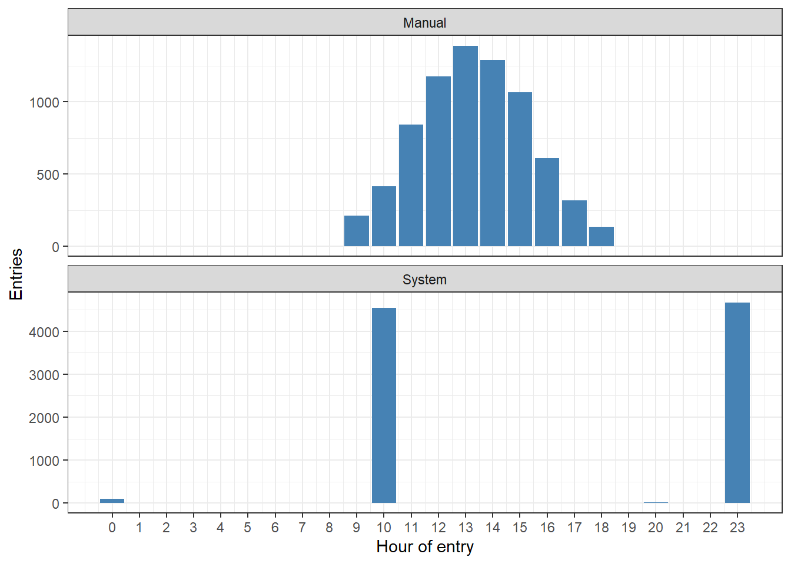
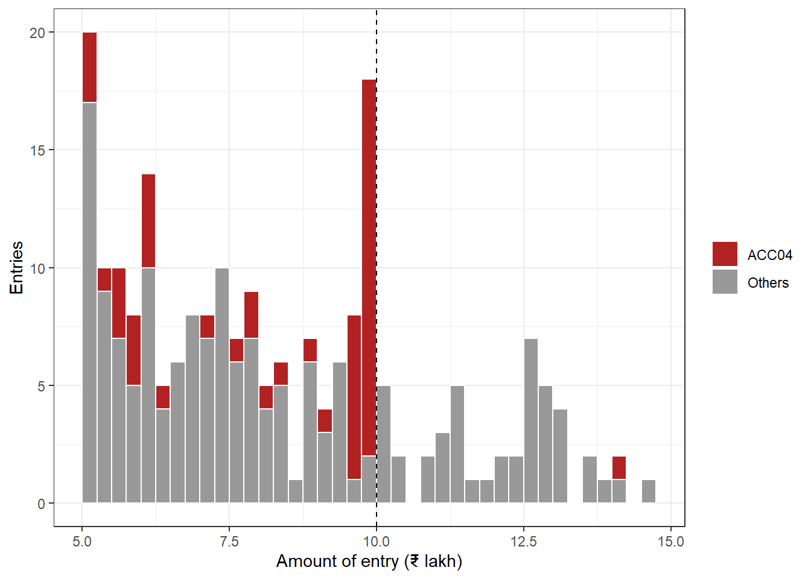
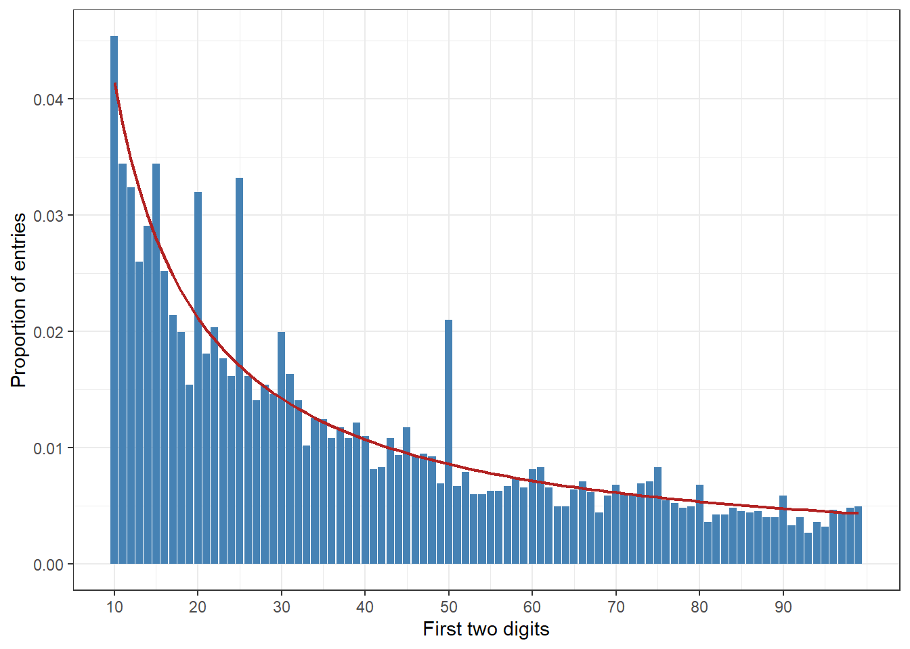
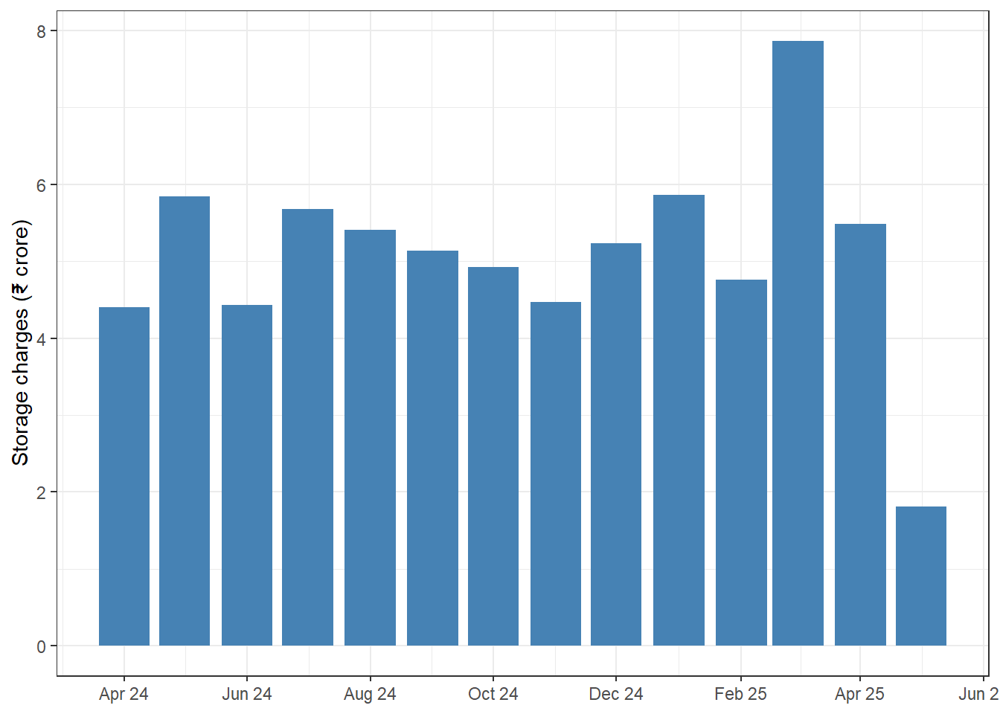

59 Journal Entry Testing
A State warehousing corporation keeps its accounts on an ERP system. Every bill, receipt, salary run and depreciation charge reaches the general ledger as a journal entry. Most entries are made by the system itself, or keyed in by the accountants as part of their daily work. A few are different. A manager books a large sum as income on the last day of the year. A store keeper, who has no business in the ledger, posts bills late at night. An accountant keeps every bill just below the amount that needs the General Manager’s approval. Each of these entries looks ordinary on its own. Among twenty thousand others, nobody notices them.
Journal entries are where management can override controls. A person with enough authority can record an entry that no ordinary control will stop, because the controls are run by the same people. Standards on auditing therefore single out journal entries for testing. This chapter shows how to test every entry in a general ledger with R, rather than a handful picked by hand.
This chapter opens Part IX, which applies the techniques of earlier chapters to whole audit areas. The chapters after it do the same for tenders. We will check that the ledger received is complete. We will profile who posts, when and to which accounts. We will then run one test for each characteristic of a suspicious entry, using dates and times (Chapter 18), round numbers and approval limits (Chapter 33), duplicates (Chapter 34), narrations (Section 51.11), segregation of duties (Section 38.6) and rare combinations (Chapter 48). Finally we will combine the tests into a simple risk score, in the spirit of Section 61.8, and select entries for examination.
As with every chapter in this part, a flag is not a finding. Most flagged entries will have a good reason. The aim is to find the few that need a question, and to show in the working papers why those were chosen.
This chapter uses tidyverse, which includes lubridate. If it is missing, install it with the command below. Section C.2 lists the packages of every part.
install.packages(c("tidyverse"))Prerequisites
59.1 Why journal entries matter
The standards on auditing that deal with fraud are SA 240, issued by the Institute of Chartered Accountants of India, and ISA 240, its international counterpart. Both recognise that management is in a unique position to commit fraud by overriding controls. So, whatever the auditor’s view of the risk, both require procedures to test the appropriateness of journal entries recorded in the general ledger, and of other adjustments made in preparing the financial statements. The auditor is expected to select entries made at the end of the reporting period, and to consider entries made throughout the period. The standards also ask the auditor to understand the entity’s process for making entries, and to talk to the people who make them.
Auditing guidance describes the features that fraudulent entries often have. They are general characteristics, not rules, and each of them also fits many honest entries. The table below lists them, with the test this chapter uses for each.
| Characteristic | Test in this chapter |
|---|---|
| Recorded at the end of the period, or after closing | Section 59.6.1 |
| Made by people who do not normally make entries | Section 59.6.2 |
| Made at unusual times | Section 59.6.3 |
| Approved by the same person who made them | Section 59.6.4 |
| Amounts just below an approval limit | Section 59.6.5 |
| Round amounts, or amounts with the same endings | Section 59.6.6 |
| Little or no explanation | Section 59.6.8 |
| The same entry posted twice | Section 59.6.9 |
| Reversed soon after the period end | Section 59.6.10 |
| Manual entries to revenue or cash | Section 59.6.11 |
| Unrelated, unusual or seldom-used accounts | Section 59.7 |
The same question arises in Indian government audit wherever accounts are kept on the commercial pattern. Public sector undertakings, autonomous bodies and corporations increasingly run ERP systems, whose ledgers can be extracted in full. Testing every entry is then quicker than testing a sample. It also shows patterns that a sample cannot, such as one user’s entries clustering below a limit.
59.2 Our data, a general ledger of a State warehousing company
Our auditee is an imaginary State warehousing corporation. It stores foodgrains and other goods for depositors, earns storage and handling charges, and is building new godowns. We have received its general ledger for 2024-25, and for April and May 2025, the months in which the accounts were closed.
The table gl has one row for each line of a journal entry, with these columns.
-
je_idis the entry number, andlinethe line within the entry. Every entry has two or more lines. -
fyandperiodgive the financial year and the month within it. April is period 1 and March is period 12. Entries dated 31 March but recorded after the year end go to a special period 13, which the ERP keeps for year-end adjustments. -
posting_dateis the accounting date, anddocument_datethe date of the bill or voucher behind it.entered_atis the date and time when the entry was actually keyed in, in Indian Standard Time. -
account_code,account_nameandaccount_type(Asset, Liability, Income or Expense) identify the account. -
debitandcreditare the amounts, in rupees. On each line, one of them is zero. -
sourceis “System” for entries made by an interface, such as billing or payroll, and “Manual” for entries keyed in by a person. -
user_idis the person who made the entry, andapprover_idthe person who approved it. System entries have no approver. -
narrationis the explanation typed with the entry.
There are also four smaller tables. coa is the chart of accounts. users is the user master, with each user’s department, role, and dates of joining and leaving. tb is the trial balance for 2024-25, printed from the ERP. holidays lists the gazetted holidays of the State. The company works Monday to Friday.
The company’s own rules, which we will test against, are simple. A manual entry above ₹10 lakh must be approved by the General Manager (Finance). Smaller entries are approved by one of the two Managers (Finance). Every manual entry above ₹1 lakh must be approved by someone other than the person who made it.
Most of the ledger is routine. The billing interface posts storage bills every night, and bank receipts are imported each morning. The system posts payroll and depreciation at month end. Accountants book provisions on the last working day of each month, and the system reverses them the next day. The accountants worked over the closing weekend in March. After the year end, the finance team booked genuine provisions, and late bills of March were entered in April. Eight cases have been planted.
- A year-end revenue boost. A manager books six entries of storage income, dated 31 March 2025 but keyed in during April. They debit receivables and credit revenue. In May they are reversed.
- A user who should not be posting. A store keeper posts bills of one vendor, often late at night or on holidays.
- Self-approved entries. A manager approves their own entries above ₹1 lakh.
- Entries just below the approval limit. One accountant keeps keying in bills a little under ₹10 lakh.
- Round amounts to suspense and provisions. Round sums are moved to the suspense account, and round provisions for repairs are booked in March.
- A rare account combination. Capital work-in-progress is paid in cash, three times.
- Narrations that explain nothing. A dozen entries say only “adj”, “ok” or “as per instructions”, or nothing at all.
- A duplicate. One vendor’s bill is posted twice, two days apart.
The extract also has a problem of completeness, which we must find before running any test.
Code to create the general ledger
set.seed(2425)
# Gazetted holidays of the imaginary State, and the company's working days (Monday to Friday)
holidays <- as.Date(c("2024-04-11", "2024-04-17", "2024-05-23", "2024-08-15", "2024-08-26",
"2024-10-02", "2024-10-31", "2024-11-15", "2024-12-25", "2025-01-26",
"2025-02-26", "2025-03-14", "2025-04-18", "2025-05-12"))
all_days <- seq(as.Date("2024-04-01"), as.Date("2025-05-31"), by = "day")
work_days <- all_days[wday(all_days, week_start = 1) <= 5 & !all_days %in% holidays]
next_wd <- function(d) work_days[pmin(findInterval(as.numeric(d) - 1, as.numeric(work_days)) + 1,
length(work_days))]
stamp <- function(d, h) force_tz(as_datetime(d), "Asia/Kolkata") + round(h * 3600)
office_h <- function(n) pmin(pmax(rnorm(n, 13.8, 2), 9.7), 18.6)
fy_wd <- work_days[work_days <= as.Date("2025-03-31")]
coa <- tribble(
~account_code, ~account_name, ~account_type,
"1101", "Cash in hand", "Asset",
"1102", "Bank current account", "Asset",
"1201", "Trade receivables", "Asset",
"1301", "Advances to staff", "Asset",
"1401", "Capital work-in-progress", "Asset",
"1501", "Buildings and warehouses", "Asset",
"1502", "Accumulated depreciation", "Asset",
"1601", "Suspense account", "Asset",
"1701", "GST input credit", "Asset",
"2101", "Trade payables", "Liability",
"2201", "Salary payable", "Liability",
"2301", "TDS payable", "Liability",
"2302", "GST output payable", "Liability",
"2401", "Provision for expenses", "Liability",
"2402", "Provision for doubtful debts", "Liability",
"2403", "Provision for gratuity", "Liability",
"2501", "Security deposits from depositors", "Liability",
"3101", "Storage charges", "Income",
"3102", "Handling charges", "Income",
"3201", "Interest income", "Income",
"3301", "Miscellaneous income", "Income",
"4101", "Salaries and wages", "Expense",
"4102", "Gratuity expense", "Expense",
"4201", "Electricity", "Expense",
"4202", "Repairs and maintenance", "Expense",
"4203", "Security services", "Expense",
"4204", "Fumigation and chemicals", "Expense",
"4301", "Depreciation", "Expense",
"4401", "Office expenses", "Expense",
"4402", "Audit fee", "Expense",
"4501", "Bad and doubtful debts", "Expense"
)
acc_label <- c("4201" = "electricity", "4202" = "repairs of godowns", "4203" = "security services",
"4204" = "fumigation chemicals", "4401" = "office expenses")
users <- tribble(
~user_id, ~department, ~role, ~joined, ~left,
"ACC01", "Accounts", "Accountant", "2016-07-01", NA,
"ACC02", "Accounts", "Accountant", "2018-03-12", NA,
"ACC03", "Accounts", "Accountant", "2019-08-01", NA,
"ACC04", "Accounts", "Accountant", "2021-01-04", NA,
"ACC05", "Accounts", "Accountant", "2022-06-15", NA,
"ACC06", "Accounts", "Accountant", "2025-01-01", NA,
"ACC07", "Accounts", "Accountant", "2012-04-02", "2024-12-31",
"ACM01", "Accounts", "Manager (Finance)", "2010-09-01", NA,
"ACM02", "Accounts", "Manager (Finance)", "2014-02-17", NA,
"FIN01", "Finance", "General Manager (Finance)", "2008-05-05", NA,
"HR01", "Human Resources", "Payroll officer", "2017-11-20", NA,
"ITA02", "Information Technology", "System administrator", "2020-10-01", NA,
"STR03", "Stores", "Store keeper", "2019-02-11", NA,
"SYSTEM", "Information Technology", "Batch interface", NA, NA
) |>
mutate(across(c(joined, left), as.Date))
acc_for <- function(d) {
sixth <- if_else(d <= as.Date("2024-12-31"), "ACC07", "ACC06")
pick <- sample(1:6, length(d), TRUE, prob = c(0.2, 0.2, 0.18, 0.14, 0.14, 0.14))
if_else(pick == 6, sixth, sprintf("ACC%02d", pick))
}
approver_for <- function(amount) {
if_else(amount > 1e6, "FIN01", sample(c("ACM01", "ACM02"), length(amount), TRUE))
}
# Entries are collected in E and their lines in L
E <- list(); L <- list(); k <- 0
keys <- function(n) { k <<- k + n; seq_len(n) + k - n }
dr <- function(e, acc, amt) tibble(key = e$key, account_code = acc, debit = amt, credit = 0)
cr <- function(e, acc, amt) tibble(key = e$key, account_code = acc, debit = 0, credit = amt)
add <- function(e, lines, case = NA_character_) {
E[[length(E) + 1]] <<- mutate(e, case = case)
L[[length(L) + 1]] <<- lines
}
entry <- function(d, entered, source, user, approver, narration, doc = d) {
tibble(key = keys(length(d)), posting_date = d, document_date = doc, entered_at = entered,
source = source, user_id = user, approver_id = approver, narration = narration)
}
# 1. Storage bills, posted every night by the billing interface
d <- rep(work_days, rpois(length(work_days), 16)); n <- length(d)
storage <- round(rlnorm(n, log(110000), 0.8), 2)
handling <- if_else(runif(n) < 0.3, round(rlnorm(n, log(25000), 0.6), 2), 0)
gst <- round(0.18 * (storage + handling), 2)
e <- entry(d, stamp(d, 23 + runif(n, 0, 0.9)), "System", "SYSTEM", NA,
paste0("Storage bill SB/", sample(10000:99999, n, TRUE), " to depositor D-", sample(100:480, n, TRUE)))
add(e, bind_rows(dr(e, "1201", storage + handling + gst), cr(e, "3101", storage),
cr(e[handling > 0, ], "3102", handling[handling > 0]), cr(e, "2302", gst)))
# 2. Receipts from depositors, imported from the bank statement each morning
d <- rep(work_days, rpois(length(work_days), 15)); n <- length(d)
amt <- round(rlnorm(n, log(120000), 0.8), 2)
e <- entry(d, stamp(d, runif(n, 10, 10.8)), "System", "SYSTEM", NA,
paste0("Receipt from depositor D-", sample(100:480, n, TRUE), ", UTR ", sample(1e8:9e8, n, TRUE)))
add(e, bind_rows(dr(e, "1102", amt), cr(e, "1201", amt)))
# 3. Vendor bills keyed in by the accountants
d <- rep(work_days, rpois(length(work_days), 10)); n <- length(d)
base <- round(rlnorm(n, log(45000), 1.1), 2); gst <- round(0.18 * base, 2)
exp_acc <- sample(c("4201", "4202", "4204", "4401"), n, TRUE, prob = c(0.2, 0.35, 0.2, 0.25))
ent_d <- next_wd(d + if_else(runif(n) < 0.3, sample(1:3, n, TRUE), 0L))
e <- entry(d, stamp(ent_d, office_h(n)), "Manual", acc_for(d), approver_for(base + gst),
paste0("Being bill no ", sample(100:9999, n, TRUE), " of vendor V-",
sprintf("%03d", sample(1:180, n, TRUE)), " for ", acc_label[exp_acc]),
doc = d - sample(0:20, n, TRUE))
add(e, bind_rows(dr(e, exp_acc, base), dr(e, "1701", gst), cr(e, "2101", base + gst)))
# 4. Payments to vendors
d <- rep(work_days, rpois(length(work_days), 9)); n <- length(d)
amt <- round(rlnorm(n, log(52000), 1.1), 2)
e <- entry(d, stamp(d, office_h(n)), "Manual", acc_for(d), approver_for(amt),
paste0("Payment to vendor V-", sprintf("%03d", sample(1:180, n, TRUE)),
" against bill no ", sample(100:9999, n, TRUE)))
add(e, bind_rows(dr(e, "2101", amt), cr(e, "1102", amt)))
# 5. Petty cash. Many small round amounts, and a few entries keyed in without a narration
d <- rep(work_days, rpois(length(work_days), 2)); n <- length(d)
amt <- if_else(runif(n) < 0.5, sample(c(500, 1000, 1500, 2000, 2500, 5000), n, TRUE),
round(runif(n, 200, 9000)))
narr <- paste0("Petty cash, ", sample(c("tea and refreshments", "courier charges", "local conveyance",
"stationery", "minor repairs to furniture"), n, TRUE))
narr[sample(n, 6)] <- ""
e <- entry(d, stamp(d, office_h(n)), "Manual", acc_for(d), sample(c("ACM01", "ACM02"), n, TRUE), narr)
add(e, bind_rows(dr(e, "4401", amt), cr(e, "1101", amt)))
# 6. Cash drawn from the bank every Monday
d <- work_days[wday(work_days, week_start = 1) == 1]; n <- length(d)
amt <- sample(c(20000, 25000, 30000), n, TRUE)
e <- entry(d, stamp(d, runif(n, 10.5, 12)), "Manual", "ACC03", "ACM01",
paste0("Cash drawn for petty expenses, cheque no ", sample(400000:499999, n)))
add(e, bind_rows(dr(e, "1101", amt), cr(e, "1102", amt)))
# 7. Advances to staff, and their adjustment against bills a few weeks later
d <- rep(work_days, rpois(length(work_days), 1)); n <- length(d)
amt <- round(runif(n, 5000, 50000), -3)
emp <- sprintf("E-%03d", sample(1:350, n, TRUE))
e <- entry(d, stamp(d, office_h(n)), "Manual", acc_for(d), sample(c("ACM01", "ACM02"), n, TRUE),
paste0("Advance to employee ", emp, " for tour"))
add(e, bind_rows(dr(e, "1301", amt), cr(e, "1102", amt)))
d2 <- next_wd(d + sample(10:40, n, TRUE)); keep <- d2 > d
adj <- round(amt * runif(n, 0.7, 1), 2)
e <- entry(d2[keep], stamp(d2[keep], office_h(sum(keep))), "Manual", acc_for(d2[keep]),
sample(c("ACM01", "ACM02"), sum(keep), TRUE),
paste0("Tour advance of ", emp[keep], " adjusted against TA bill"))
add(e, bind_rows(dr(e, "4401", adj[keep]), cr(e, "1301", adj[keep])))
# 8. Running bills of contractors building new godowns, and capitalisation on completion
d <- rep(work_days, rpois(length(work_days), 0.5)); n <- length(d)
amt <- round(rlnorm(n, log(600000), 0.8), 2)
e <- entry(d, stamp(d, office_h(n)), "Manual", acc_for(d), approver_for(amt),
paste0("Being RA bill no ", sample(1:12, n, TRUE), " of contractor V-",
sample(c("041", "057", "063"), n, TRUE), " for construction of godown"))
add(e, bind_rows(dr(e, "1401", amt), cr(e, "1102", amt)))
d <- as.Date(c("2024-09-30", "2024-12-31", "2025-03-28")); amt <- c(21000000, 14000000, 33000000)
e <- entry(d, stamp(d, c(15.5, 16.2, 15.1)), "Manual", "ACM01", "FIN01",
paste("Capitalisation of godown at", c("Rampur", "Keshavnagar", "Sitapur"), "on completion"))
add(e, bind_rows(dr(e, "1501", amt), cr(e, "1401", amt)))
# 9. Security deposits received from depositors
d <- rep(fy_wd, rpois(length(fy_wd), 0.7)); n <- length(d)
amt <- sample(c(25000, 50000, 75000, 100000, 150000, 200000), n, TRUE)
e <- entry(d, stamp(d, office_h(n)), "Manual", acc_for(d), approver_for(amt),
paste0("Security deposit received from depositor D-", sample(100:480, n, TRUE)))
add(e, bind_rows(dr(e, "1102", amt), cr(e, "2501", amt)))
# 10. Interest on deposits, each quarter, and small miscellaneous income
d <- as.Date(c("2024-06-28", "2024-09-30", "2024-12-31", "2025-03-28")); n <- 4
amt <- round(runif(n, 1800000, 2500000), 2)
e <- entry(d, stamp(d, office_h(n)), "Manual", "ACC02", "FIN01", "Interest on fixed deposits for the quarter")
add(e, bind_rows(dr(e, "1102", amt), cr(e, "3201", amt)))
d <- rep(work_days, rpois(length(work_days), 0.1)); n <- length(d)
amt <- round(rlnorm(n, log(15000), 0.8), 2)
e <- entry(d, stamp(d, office_h(n)), "Manual", acc_for(d), sample(c("ACM01", "ACM02"), n, TRUE),
sample(c("Sale of tender forms", "Sale of scrap gunny bags", "Penalty recovered from depositor"), n, TRUE))
add(e, bind_rows(dr(e, "1102", amt), cr(e, "3301", amt)))
# 11. Unidentified bank receipts parked in suspense, and cleared when the depositor is known
d <- rep(fy_wd, rpois(length(fy_wd), 0.3)); n <- length(d)
amt <- round(rlnorm(n, log(80000), 0.7), 2)
e <- entry(d, stamp(d, runif(n, 10, 10.8)), "System", "SYSTEM", NA,
paste0("Unidentified credit in bank, UTR ", sample(1e8:9e8, n)))
add(e, bind_rows(dr(e, "1102", amt), cr(e, "1601", amt)))
d2 <- next_wd(d + sample(5:40, n, TRUE))
e <- entry(d2, stamp(d2, office_h(n)), "Manual", acc_for(d2), sample(c("ACM01", "ACM02"), n, TRUE),
paste0("Unidentified receipt cleared, depositor D-", sample(100:480, n, TRUE), " identified"))
add(e, bind_rows(dr(e, "1601", amt), cr(e, "1201", amt)))
# 12. Monthly postings. Payroll, statutory dues, depreciation, rent of security, accruals
godowns <- c("Rampur", "Keshavnagar", "Sitapur", "Bhawanipur", "Chandgarh", "Dhanpur",
"Madhopur", "Ratanpur")
months_list <- seq(as.Date("2024-04-01"), as.Date("2025-05-01"), by = "month")
for (i in seq_along(months_list)) {
m <- months_list[i]
wd_m <- work_days[work_days >= m & work_days < m %m+% months(1)]
last_day <- m %m+% months(1) - 1
gross <- round(rnorm(1, 16200000, 300000), 2); tds <- round(0.08 * gross, 2)
e <- entry(max(wd_m), stamp(max(wd_m), 20.5), "System", "SYSTEM", NA,
paste("Salary for", format(m, "%B %Y"), "from payroll"))
add(e, bind_rows(dr(e, "4101", gross), cr(e, "2201", gross - tds), cr(e, "2301", tds)))
e <- entry(last_day, stamp(last_day, 23.8), "System", "SYSTEM", NA,
paste("Depreciation for", format(m, "%B %Y")))
add(e, bind_rows(dr(e, "4301", 1842300), cr(e, "1502", 1842300)))
sec_d <- wd_m[4]
e <- entry(sec_d, stamp(sec_d, office_h(1)), "Manual", "ACC02", "ACM01",
paste("Being bill of vendor V-012 for security services,", format(m, "%B %Y")))
add(e, bind_rows(dr(e, "4203", 385000), dr(e, "1701", 69300), cr(e, "2101", 454300)))
if (i < length(months_list)) {
wd_next <- work_days[work_days >= m %m+% months(1) & work_days < m %m+% months(2)]
e <- entry(wd_next[1], stamp(wd_next[1], 11.5), "Manual", "ACC01", "FIN01",
paste("Salary paid for", format(m, "%B %Y")))
add(e, bind_rows(dr(e, "2201", gross - tds), cr(e, "1102", gross - tds)))
d7 <- next_wd(m %m+% months(1) + 5)
e <- entry(d7, stamp(d7, 12.5), "Manual", "ACC02", "FIN01", paste("TDS deposited for", format(m, "%B %Y")))
add(e, bind_rows(dr(e, "2301", tds), cr(e, "1102", tds)))
d20 <- next_wd(m %m+% months(1) + 18); gst_amt <- round(rnorm(1, 9000000, 900000), 2)
e <- entry(d20, stamp(d20, 15), "Manual", "ACC03", "FIN01", paste("GST paid for", format(m, "%B %Y")))
add(e, bind_rows(dr(e, "2302", gst_amt), cr(e, "1102", gst_amt)))
# Month-end accruals, reversed automatically on the first day of the next month
acc <- sample(c("4201", "4202", "4204", "4401"), 8, TRUE)
amt <- round(rlnorm(8, log(150000), 0.6), -4)
gd <- sample(godowns)
e <- entry(rep(max(wd_m), 8), stamp(max(wd_m), runif(8, 15, 18)), "Manual",
sample(c("ACC01", "ACC02"), 8, TRUE), sample(c("ACM01", "ACM02"), 8, TRUE),
paste0("Being provision for ", acc_label[acc], " at ", gd, " godown for ",
format(m, "%B %Y"), ", bill awaited"))
add(e, bind_rows(dr(e, acc, amt), cr(e, "2401", amt)))
first_day <- m %m+% months(1)
e <- entry(rep(first_day, 8), stamp(first_day, 0.3), "System", "SYSTEM", NA,
paste0("Auto reversal of provision for ", acc_label[acc], " at ", gd, " godown for ",
format(m, "%B %Y")))
add(e, bind_rows(dr(e, "2401", amt), cr(e, acc, amt)))
}
}
# 13. Payroll corrections by the payroll officer, and two test entries by the system administrator
d <- sort(sample(fy_wd, 12)); amt <- round(runif(12, 5000, 60000))
e <- entry(d, stamp(d, office_h(12)), "Manual", "HR01", "ACM01",
paste0("Arrears of DA to employee E-", sample(100:350, 12), ", payroll correction"))
add(e, bind_rows(dr(e, "4101", amt), cr(e, "2201", amt)))
d <- as.Date("2024-08-17")
e <- entry(d, stamp(d, 15.2), "Manual", "ITA02", "ITA02", "Test entry after ERP patch")
add(e, bind_rows(dr(e, "4401", 1), cr(e, "1101", 1)))
e <- entry(d, stamp(d, 15.4), "Manual", "ITA02", "ITA02", "Reversal of test entry after ERP patch")
add(e, bind_rows(dr(e, "1101", 1), cr(e, "4401", 1)))
# 14. Genuine year-end work. Bills keyed in over the closing weekend, late bills for March
# entered in April, and year-end provisions by the finance team
d <- rep(as.Date("2025-03-28"), 20)
ent <- stamp(as.Date("2025-03-29") + rep(0:1, each = 10), runif(20, 10.5, 17.5))
base <- round(rlnorm(20, log(60000), 0.9), 2); gst <- round(0.18 * base, 2)
acc <- sample(c("4201", "4202", "4204", "4401"), 20, TRUE)
e <- entry(d, ent, "Manual", sample(c("ACC01", "ACC02", "ACC03"), 20, TRUE), approver_for(base + gst),
paste0("Being bill no ", sample(100:9999, 20), " of vendor V-", sprintf("%03d", sample(1:180, 20)),
" for ", acc_label[acc]), doc = d - sample(0:10, 20, TRUE))
add(e, bind_rows(dr(e, acc, base), dr(e, "1701", gst), cr(e, "2101", base + gst)))
d <- rep(as.Date("2025-03-31"), 15)
ent_d <- sort(sample(work_days[work_days >= as.Date("2025-04-01") & work_days <= as.Date("2025-04-25")], 15, TRUE))
base <- round(rlnorm(15, log(80000), 0.9), 2); gst <- round(0.18 * base, 2)
acc <- sample(c("4201", "4202", "4204", "4401"), 15, TRUE)
e <- entry(d, stamp(ent_d, office_h(15)), "Manual", sample(c("ACC01", "ACC02"), 15, TRUE),
approver_for(base + gst),
paste0("Being bill no ", sample(100:9999, 15), " of vendor V-", sprintf("%03d", sample(1:180, 15)),
" for ", acc_label[acc], ", March 2025, received late"),
doc = as.Date("2025-03-31") - sample(0:20, 15, TRUE))
add(e, bind_rows(dr(e, acc, base), dr(e, "1701", gst), cr(e, "2101", base + gst)))
d <- rep(as.Date("2025-03-31"), 3)
e <- entry(d, stamp(as.Date(c("2025-04-22", "2025-04-24", "2025-04-15")), c(11.5, 16.2, 12)),
"Manual", c("FIN01", "FIN01", "ACM01"), c("FIN01", "FIN01", "FIN01"),
c("Provision for gratuity as per actuarial valuation report dated 18.04.2025",
"Provision for doubtful debts on receivables over three years old, as per Board note",
"Provision for statutory audit fee for 2024-25"))
add(e, bind_rows(dr(e, c("4102", "4501", "4402"), c(3846215, 6240000, 300000)),
cr(e, c("2403", "2402", "2401"), c(3846215, 6240000, 300000))))
# ---- Planted cases ----
# Planted 1. Storage income booked on 31 March 2025, entered in April, reversed in May
amt <- c(4860000, 5230000, 3975000, 6120000, 4490000, 5540000)
e <- entry(rep(as.Date("2025-03-31"), 6),
stamp(as.Date(c("2025-04-09", "2025-04-10", "2025-04-11", "2025-04-12", "2025-04-12", "2025-04-12")),
c(18.8, 17.6, 19.3, 11.1, 11.7, 12.2)),
"Manual", "ACM01", "FIN01", "Storage income for March 2025, bills under preparation")
add(e, bind_rows(dr(e, "1201", amt), cr(e, "3101", amt)), "1 Revenue boost")
d <- as.Date(c("2025-05-07", "2025-05-07", "2025-05-08", "2025-05-08", "2025-05-09", "2025-05-09"))
e <- entry(d, stamp(d, office_h(6)), "Manual", "ACM01", "FIN01", "Rectification of entry dated 31.03.2025")
add(e, bind_rows(dr(e, "3101", amt), cr(e, "1201", amt)), "1 Revenue boost reversal")
# Planted 2. A store keeper posts bills of one vendor, often at night or on holidays
ent <- ymd_hm(c("2024-07-09 22:40", "2024-08-15 12:15", "2024-08-29 23:05", "2024-09-21 16:30",
"2024-10-02 11:50", "2024-10-24 00:45", "2024-11-12 15:20", "2024-11-28 22:55",
"2024-12-25 13:10", "2025-01-14 23:30", "2025-01-26 12:40", "2025-02-06 15:05",
"2025-02-20 00:20", "2025-03-08 17:45"), tz = "Asia/Kolkata")
d <- as_date(ent - hours(2)); base <- round(rlnorm(14, log(320000), 0.35), 2); gst <- round(0.18 * base, 2)
bill_no <- sample(2000:2999, 14)
e <- entry(d, ent, "Manual", "STR03", "ACM02",
paste0("Being bill no ", bill_no, " of vendor V-217 for fumigation chemicals"),
doc = d - sample(2:10, 14, TRUE))
add(e, bind_rows(dr(e, "4204", base), dr(e, "1701", gst), cr(e, "2101", base + gst)), "2 Store keeper")
d2 <- next_wd(d + sample(12:25, 14, TRUE))
e <- entry(d2, stamp(d2, office_h(14)), "Manual", acc_for(d2), "ACM02",
paste0("Payment to vendor V-217 against bill no ", bill_no))
add(e, bind_rows(dr(e, "2101", base + gst), cr(e, "1102", base + gst)))
# Planted 3. A manager approves their own entries above Rs 1 lakh
d <- sort(sample(fy_wd[fy_wd >= as.Date("2024-06-01")], 8)); base <- round(runif(8, 150000, 720000), 2)
gst <- round(0.18 * base, 2)
e <- entry(d, stamp(d, office_h(8)), "Manual", "ACM02", "ACM02",
paste0("Being bill no ", sample(100:9999, 8), " of vendor V-1", sample(10:99, 8),
" for repairs of godown no G-", sample(10:60, 8)), doc = d - sample(1:15, 8, TRUE))
add(e, bind_rows(dr(e, "4202", base), dr(e, "1701", gst), cr(e, "2101", base + gst)), "3 Self-approved")
# Planted 4. Bills just below the approval limit of Rs 10 lakh, all keyed in by one accountant
d <- sort(sample(fy_wd[fy_wd >= as.Date("2024-09-01")], 22)); tot <- round(runif(22, 955000, 999000), 2)
base <- round(tot / 1.18, 2)
e <- entry(d, stamp(d, office_h(22)), "Manual", "ACC04", sample(c("ACM01", "ACM02"), 22, TRUE),
paste0("Being bill no ", sample(100:9999, 22), " of vendor V-", sample(c("131", "142", "158"), 22, TRUE),
" for repairs of godowns"), doc = d - sample(1:15, 22, TRUE))
add(e, bind_rows(dr(e, "4202", base), dr(e, "1701", tot - base), cr(e, "2101", tot)), "4 Below limit")
# Planted 5. Round amounts sent to suspense, and round provisions for repairs in March
d <- sort(sample(fy_wd[fy_wd >= as.Date("2024-10-01")], 6))
amt <- c(200000, 500000, 300000, 750000, 400000, 250000)
e <- entry(d, stamp(d, office_h(6)), "Manual", "ACC05", "ACM02", "Amount transferred to suspense, to be adjusted")
add(e, bind_rows(dr(e, "1601", amt), cr(e, "1102", amt)), "5 Round to suspense")
d <- sort(sample(fy_wd[fy_wd >= as.Date("2025-03-03")], 4)); amt <- c(500000, 800000, 600000, 900000)
e <- entry(d, stamp(d, office_h(4)), "Manual", "ACC05", "ACM01", "Provision for repairs")
add(e, bind_rows(dr(e, "4202", amt), cr(e, "2401", amt)), "5 Round to provision")
# Planted 6. Capital work paid in cash
d <- as.Date(c("2024-10-22", "2025-01-09", "2025-03-19")); amt <- c(184500, 226000, 197300)
e <- entry(d, stamp(d, office_h(3)), "Manual", "ACC02", "ACM01", "Payment to contractor for godown shed work")
add(e, bind_rows(dr(e, "1401", amt), cr(e, "1101", amt)), "6 Rare pair")
# Planted 7. Narrations that explain nothing
d <- sort(sample(fy_wd, 12)); amt <- round(runif(12, 40000, 400000), 2)
usr <- sample(c(rep("ACC05", 8), "ACC03", "ACC03", "ACC07", "ACC07"))
usr[usr == "ACC07" & d > as.Date("2024-12-31")] <- "ACC06"
dra <- rep(c("4401", "4202", "1301"), each = 4); cra <- "2401"
e <- entry(d, stamp(d, office_h(12)), "Manual", usr, sample(c("ACM01", "ACM02"), 12, TRUE),
c("", "adj", "as per instructions", "ok", "jv", "", "adj", "as per instructions",
"adjustment", "..", "as per instructions", "adj"))
add(e, bind_rows(dr(e, dra, amt), cr(e, cra, amt)), "7 Narration")
# Planted 8. The same bill posted twice, two days apart
d <- as.Date(c("2025-02-11", "2025-02-13"))
e <- entry(d, stamp(d, c(12.4, 16.1)), "Manual", "ACC06", "ACM01",
"Being bill no 1187 of vendor V-088 for repairs of godown roof", doc = as.Date("2025-02-05"))
add(e, bind_rows(dr(e, "4202", 370779.66), dr(e, "1701", 66740.34), cr(e, "2101", 437520)), "8 Duplicate")
# An entry that is in the trial balance but will be missing from the extract
d <- as.Date("2024-11-19")
e <- entry(d, stamp(d, 14.33), "Manual", "ACC03", "ACM02", "Purchase of printer cartridges, cash memo 4471")
add(e, bind_rows(dr(e, "4401", 46850), cr(e, "1101", 46850)), "Missing")
# ---- Assemble the ledger ----
entries <- bind_rows(E) |>
arrange(entered_at, key) |>
mutate(je_id = sprintf("JE%06d", 100000 + row_number()),
fy = if_else(posting_date <= as.Date("2025-03-31"), "2024-25", "2025-26"),
period = (month(posting_date) - 4) %% 12 + 1,
period = if_else(posting_date == as.Date("2025-03-31") &
as_date(entered_at) > as.Date("2025-03-31"), 13, period))
gl_all <- bind_rows(L) |>
filter(debit > 0 | credit > 0) |>
inner_join(entries, by = "key") |>
arrange(je_id, desc(debit)) |>
mutate(line = row_number(), .by = je_id) |>
left_join(coa, by = "account_code") |>
select(je_id, line, fy, period, posting_date, document_date, entered_at, account_code,
account_name, account_type, debit, credit, source, user_id, approver_id, narration)
# The trial balance printed from the ERP, for 2024-25
tb <- gl_all |>
filter(fy == "2024-25") |>
summarise(debit = sum(debit), credit = sum(credit), .by = account_code) |>
right_join(coa, by = "account_code") |>
mutate(across(c(debit, credit), \(x) round(coalesce(x, 0), 2))) |>
select(account_code, account_name, debit, credit) |>
arrange(account_code)
planted <- entries |>
filter(!is.na(case)) |>
select(je_id, case)
# The extract received by the auditor lacks one entry
gl <- gl_all |>
filter(!je_id %in% planted$je_id[planted$case == "Missing"])
rm(list = setdiff(ls(), c("gl", "coa", "users", "tb", "holidays", "planted")))Let us look at the ledger.
glimpse(gl)Rows: 42,601
Columns: 16
$ je_id <chr> "JE100001", "JE100001", "JE100002", "JE100002", "JE10000…
$ line <int> 1, 2, 1, 2, 1, 2, 1, 2, 1, 2, 1, 2, 1, 2, 1, 2, 1, 2, 1,…
$ fy <chr> "2024-25", "2024-25", "2024-25", "2024-25", "2024-25", "…
$ period <dbl> 1, 1, 1, 1, 1, 1, 1, 1, 1, 1, 1, 1, 1, 1, 1, 1, 1, 1, 1,…
$ posting_date <date> 2024-04-01, 2024-04-01, 2024-04-01, 2024-04-01, 2024-04…
$ document_date <date> 2024-04-01, 2024-04-01, 2024-04-01, 2024-04-01, 2024-04…
$ entered_at <dttm> 2024-04-01 10:03:00, 2024-04-01 10:03:00, 2024-04-01 10…
$ account_code <chr> "1102", "1201", "1102", "1201", "1102", "1201", "1102", …
$ account_name <chr> "Bank current account", "Trade receivables", "Bank curre…
$ account_type <chr> "Asset", "Asset", "Asset", "Asset", "Asset", "Asset", "A…
$ debit <dbl> 60937.80, 0.00, 70533.42, 0.00, 92666.26, 0.00, 74791.36…
$ credit <dbl> 0.00, 60937.80, 0.00, 70533.42, 0.00, 92666.26, 0.00, 74…
$ source <chr> "System", "System", "System", "System", "System", "Syste…
$ user_id <chr> "SYSTEM", "SYSTEM", "SYSTEM", "SYSTEM", "SYSTEM", "SYSTE…
$ approver_id <chr> NA, NA, NA, NA, NA, NA, NA, NA, NA, NA, "ACM01", "ACM01"…
$ narration <chr> "Receipt from depositor D-331, UTR 750629655", "Receipt …users# A tibble: 14 × 5
user_id department role joined left
<chr> <chr> <chr> <date> <date>
1 ACC01 Accounts Accountant 2016-07-01 NA
2 ACC02 Accounts Accountant 2018-03-12 NA
3 ACC03 Accounts Accountant 2019-08-01 NA
4 ACC04 Accounts Accountant 2021-01-04 NA
5 ACC05 Accounts Accountant 2022-06-15 NA
6 ACC06 Accounts Accountant 2025-01-01 NA
7 ACC07 Accounts Accountant 2012-04-02 2024-12-31
8 ACM01 Accounts Manager (Finance) 2010-09-01 NA
9 ACM02 Accounts Manager (Finance) 2014-02-17 NA
10 FIN01 Finance General Manager (Financ… 2008-05-05 NA
11 HR01 Human Resources Payroll officer 2017-11-20 NA
12 ITA02 Information Technology System administrator 2020-10-01 NA
13 STR03 Stores Store keeper 2019-02-11 NA
14 SYSTEM Information Technology Batch interface NA NA The ledger has 42,601 lines in 16,791 entries. Before any test, though, we must make sure that it is the whole ledger.
Ask for the full general ledger for the year and the closing months, not a report filtered by someone else. It should have one row per line, with the entry number, posting date, document date, date and time of entry, source, maker, approver and narration. Ask also for the user master, the chart of accounts and the trial balance of the same date, printed by the ERP. Note who ran the extract, when, and with which query, so that it can be run again. The ledger must reconcile to the trial balance before any test. Handling such data safely is covered in Chapter 9.
59.3 From lines to entries
The ledger has one row per line, but most tests are about whole entries. Who made the entry, when, and for how much? So we first make a second table with one row per entry. Let us see the idea on two tiny entries. The first is a bill with GST, and the second a receipt.
# A tibble: 2 × 4
je_id lines debit credit
<chr> <int> <dbl> <dbl>
1 JE1 3 59000 59000
2 JE2 2 20000 20000summarise(.by = je_id) gives one row per entry. In a balanced entry, the total debit equals the total credit, so either of them is the amount of the entry. Now for the whole ledger. The columns that are the same on every line of an entry go into .by, so that they are kept.
# A tibble: 16,791 × 12
je_id fy period posting_date document_date entered_at source
<chr> <chr> <dbl> <date> <date> <dttm> <chr>
1 JE100001 2024-25 1 2024-04-01 2024-04-01 2024-04-01 10:03:00 System
2 JE100002 2024-25 1 2024-04-01 2024-04-01 2024-04-01 10:04:44 System
3 JE100003 2024-25 1 2024-04-01 2024-04-01 2024-04-01 10:05:11 System
4 JE100004 2024-25 1 2024-04-01 2024-04-01 2024-04-01 10:05:50 System
5 JE100005 2024-25 1 2024-04-01 2024-04-01 2024-04-01 10:08:54 System
6 JE100006 2024-25 1 2024-04-01 2024-04-01 2024-04-01 10:10:33 Manual
7 JE100007 2024-25 1 2024-04-01 2024-04-01 2024-04-01 10:13:48 System
8 JE100008 2024-25 1 2024-04-01 2024-04-01 2024-04-01 10:15:38 System
9 JE100009 2024-25 1 2024-04-01 2024-04-01 2024-04-01 10:16:46 System
10 JE100010 2024-25 1 2024-04-01 2024-04-01 2024-04-01 10:18:13 System
# ℹ 16,781 more rows
# ℹ 5 more variables: user_id <chr>, approver_id <chr>, narration <chr>,
# amount <dbl>, lines <int>There are 16,791 entries. 7,467 of them are manual, and the rest come from the system.
59.4 First, is the ledger complete?
A journal entry test looks for entries that should not be there. It cannot find entries that are missing from the data we were given. If the extract leaves out some entries, every test that follows is run on the wrong population. A clean result would prove nothing. So the first checks are about the data itself.
59.4.1 Every entry balances
Each entry must have equal debits and credits. Let us check all of them. We compare with a small tolerance, because sums of amounts with paise can differ in the last decimal place inside the computer.
# A tibble: 0 × 3
# ℹ 3 variables: je_id <chr>, debit <dbl>, credit <dbl>No entry is out of balance. This is what we expect from an ERP. An entry that does not balance would mean the extract was cut in the middle of an entry, or that lines were lost.
59.4.2 The ledger agrees with the trial balance
Next, the total debits and credits of each account in the ledger should equal those in the trial balance. Our trial balance shows the debits and credits of each account during 2024-25. We total the ledger in the same way, and join the two.
ledger_totals <- gl |>
filter(fy == "2024-25") |>
summarise(gl_debit = sum(debit), gl_credit = sum(credit), .by = account_code)
tb_check <- tb |>
left_join(ledger_totals, by = "account_code") |>
mutate(diff_debit = round(debit - coalesce(gl_debit, 0), 2),
diff_credit = round(credit - coalesce(gl_credit, 0), 2))
tb_check |>
summarise(tb_debit = sum(debit), gl_debit = sum(gl_debit),
tb_credit = sum(credit), gl_credit = sum(gl_credit))# A tibble: 1 × 4
tb_debit gl_debit tb_credit gl_credit
<dbl> <dbl> <dbl> <dbl>
1 2709178595. 2709131745. 2709178595. 2709131745.The totals do not quite agree. Let us find the accounts that differ.
# A tibble: 2 × 4
account_code account_name diff_debit diff_credit
<chr> <chr> <dbl> <dbl>
1 1101 Cash in hand 0 46850
2 4401 Office expenses 46850 0Two accounts differ, by the same ₹46,850. The trial balance has ₹46,850 more debited to Office expenses, and the same amount more credited to Cash in hand. The difference is tiny against total debits of ₹270.92 crore. But its shape tells a story. It looks like one whole entry, paying an office expense in cash, that is in the books but not in our extract.
59.4.3 Entries by month
A count of entries by month shows whether any month is missing or thin. Here we count by financial year, period and source.
je |>
count(fy, period, source) |>
pivot_wider(names_from = source, values_from = n)# A tibble: 15 × 4
fy period Manual System
<chr> <dbl> <int> <int>
1 2024-25 1 494 620
2 2024-25 2 529 717
3 2024-25 3 514 644
4 2024-25 4 619 728
5 2024-25 5 546 640
6 2024-25 6 518 671
7 2024-25 7 526 664
8 2024-25 8 474 668
9 2024-25 9 506 690
10 2024-25 10 603 737
11 2024-25 11 531 648
12 2024-25 12 523 609
13 2024-25 13 25 NA
14 2025-26 1 545 648
15 2025-26 2 514 640Every month is present, with similar numbers of entries. Period 13 holds 25 entries, all manual. These are entries dated 31 March 2025 but made after the year had ended. We will look at them closely in Section 59.6.1.
59.4.4 Gaps in entry numbers
The ERP numbers entries one after another as they are made. A gap in the numbers is an entry we have not received. Chapter 37 showed how to find gaps. parse_number() takes the number out of an entry number such as JE100001.
[1] 109072je |>
filter(parse_number(je_id) %in% (missing_no + c(-1, 1))) |>
select(je_id, entered_at, user_id, amount, narration)# A tibble: 2 × 5
je_id entered_at user_id amount narration
<chr> <dttm> <chr> <dbl> <chr>
1 JE109071 2024-11-19 14:04:37 ACC02 6847 Petty cash, courier charges
2 JE109073 2024-11-19 14:20:49 ACC01 41187. Payment to vendor V-035 against b…One number is missing, JE109072. Its neighbours were both entered on 19 November 2024. So the missing entry was also made that day. Together with the difference in the trial balance, this is a clear lead. An entry of ₹46,850 was made, appears in the trial balance, and was left out of the extract. It may have been deleted after the trial balance was printed, or left out by the query. The auditor asks for entry JE109072 and for the reason it is missing, and does not move on until the ledger reconciles.
If the extract leaves out entries, the tests in this chapter cannot see them. An entry that someone wished to hide is exactly the entry most likely to be missing. Reconcile the ledger to the trial balance, check the count of entries by month, and look for gaps in the numbers, before running any test. Record the result in the working papers.
59.5 A profile of the ledger
Before looking for the unusual, we need to know what is usual. Who posts entries, when, from which source, and to which accounts? Let us begin with the users. We join the entries to the user master.
# A tibble: 14 × 6
source department role user_id entries value_crore
<chr> <chr> <chr> <chr> <int> <dbl>
1 Manual Accounts Accountant ACC02 1522 18.9
2 Manual Accounts Accountant ACC01 1506 34.3
3 Manual Accounts Accountant ACC03 1393 26
4 Manual Accounts Accountant ACC04 1030 11.8
5 Manual Accounts Accountant ACC05 1003 10.7
6 Manual Accounts Accountant ACC07 582 5.4
7 Manual Accounts Accountant ACC06 377 3.9
8 Manual Accounts Manager (Finance) ACM01 16 12.9
9 Manual Stores Store keeper STR03 14 0.6
10 Manual Human Resources Payroll officer HR01 12 0
11 Manual Accounts Manager (Finance) ACM02 8 0.5
12 Manual Information Technology System administrat… ITA02 2 0
13 Manual Finance General Manager (F… FIN01 2 1
14 System Information Technology Batch interface SYSTEM 9324 190. The system makes most entries. Among people, the accountants make almost all, 7,413 entries between them. The managers and the General Manager make only a few, and mostly approve. Three users from other departments appear too. They are a payroll officer, a system administrator and a store keeper. We come back to them in Section 59.6.2.
Next, when are entries made? Figure 59.1 shows the hour of entry, separately for system and manual entries.
je |>
mutate(hour = hour(entered_at)) |>
count(source, hour) |>
ggplot(aes(hour, n)) +
geom_col(fill = "steelblue") +
facet_wrap(~source, ncol = 1, scales = "free_y") +
scale_x_continuous(breaks = 0:23) +
labs(x = "Hour of entry", y = "Entries") +
theme_bw()
The two sources behave very differently. The billing interface runs at about 11 at night, and bank receipts are imported at about 10 in the morning. Manual entries follow office hours, with a thin tail in the evening and a few dots at night. A test for “entries at night” must therefore treat the two sources separately, or it will flag every storage bill.
Finally, which accounts are used, and how often? Seldom-used accounts deserve attention, because an entry to an account that is rarely touched is harder to explain as routine.
gl |>
summarise(entries = n_distinct(je_id),
manual = n_distinct(je_id[source == "Manual"]),
.by = c(account_code, account_name)) |>
arrange(entries) |>
head(8)# A tibble: 8 × 4
account_code account_name entries manual
<chr> <chr> <int> <int>
1 4402 Audit fee 1 1
2 4102 Gratuity expense 1 1
3 2403 Provision for gratuity 1 1
4 4501 Bad and doubtful debts 1 1
5 2402 Provision for doubtful debts 1 1
6 1501 Buildings and warehouses 3 3
7 3201 Interest income 4 4
8 4203 Security services 14 145 accounts are used only once. Each holds a year-end provision or its expense, booked once a year, so the rarity is expected. Rarity on its own says little. Rare combinations of accounts say more, as we will see in Section 59.7.
59.6 The tests, one characteristic at a time
We now run one test for each characteristic in Table 59.1. Each test adds a column to je whose name begins with f_, for flag. The column is TRUE when the entry has the characteristic. For each test we ask two questions. Why does it matter? And what innocent reasons could produce a hit?
59.6.1 Entries recorded after the year end
Entries made after the books are closed, but dated in the closed year, change figures that have already been prepared. Fraudulent entries are often made at this stage, when the result for the year is known and there is pressure to improve it. Our year ended on 31 March 2025.
# A tibble: 4 × 5
user_id role entries value_lakh last_entered
<chr> <chr> <int> <dbl> <date>
1 ACC02 Accountant 9 8.9 2025-04-24
2 ACC01 Accountant 7 5.6 2025-04-23
3 ACM01 Manager (Finance) 7 305. 2025-04-15
4 FIN01 General Manager (Finance) 2 101. 2025-04-24 as_date() takes the date part of the time stamp. 25 entries dated in 2024-25 were made after the year end. Most are innocent. The accountants entered bills of March that arrived late, and the General Manager (Finance) booked the provisions for gratuity and doubtful debts on the basis of reports received in April. These are the normal adjustments of closing. But one manager, ACM01, made 7 such entries worth ₹305.1 lakh, far more in value than anyone else. We follow them in Section 59.9.
59.6.2 Entries by people who do not normally post
In a well-run company, only the accounts and finance staff post journal entries. A user from another department who posts entries may be doing someone else’s work, may have more access than the role needs, or may be using another person’s login. Let us flag manual entries by users outside Accounts and Finance.
# A tibble: 3 × 5
user_id department role entries value_lakh
<chr> <chr> <chr> <int> <dbl>
1 HR01 Human Resources Payroll officer 12 4.3
2 STR03 Stores Store keeper 14 60.3
3 ITA02 Information Technology System administrator 2 0 Three users are found. The payroll officer HR01 made 12 small payroll corrections for arrears, a plausible part of the job. The system administrator ITA02 made 2 entries of one rupee, a test and its reversal after an ERP patch. Test entries do not belong in the live ledger, which is itself a point to raise. The store keeper STR03 made 14 entries worth ₹60.3 lakh. No ordinary duty of a store keeper explains this. We look closely at STR03 in Section 59.10.
59.6.3 Entries at night, at weekends and on holidays
Section 18.11 looked for approvals made outside office hours. The same test applies to journal entries. A manual entry made at midnight, or on a holiday, is not wrong in itself. But it was made when nobody else was around to see it. We use the hour of entered_at, the day of the week, and the list of holidays.
# A tibble: 7 × 3
source user_id n
<chr> <chr> <int>
1 System SYSTEM 4789
2 Manual STR03 12
3 Manual ACC03 8
4 Manual ACC01 7
5 Manual ACC02 5
6 Manual ACM01 4
7 Manual ITA02 2The system made 4,789 entries at odd times, nearly all of them the nightly billing run. These are innocent, and they would swamp any list. So our flag counts only manual entries.
je <- je |>
mutate(f_offhours = source == "Manual" & odd_time)That leaves 38 manual entries. 20 of them were made by the accountants on Saturday 29 and Sunday 30 March 2025, the closing weekend, when the office was open to finish the year. The two test entries of the system administrator were made on a Saturday. The largest group, 12 entries, belongs to the store keeper STR03. The remaining 4 belong to ACM01, made in the evening and on a Saturday in April 2025.
The hour of an entry is only as good as the clock that recorded it. Many ERP systems keep time stamps in UTC, which is five and a half hours behind Indian Standard Time, or in the time zone of a server located elsewhere. Read in the wrong zone, an entry made at 11 in the morning looks like one made at 5:30 in the morning.
[1] "2025-04-12 11:10:00 IST"Before testing hours, ask the IT team how the ERP stores time, and check a few entries whose time you know, such as the nightly billing run. Use with_tz() to show a UTC time in Indian time, and force_tz() when a time was stored without a zone but is known to be Indian time. Chapter 18 explains both. Also ask whether entered_at is the time of entry or the time of the last change. Some systems overwrite it when an entry is edited.
59.6.4 Entries approved by their own maker
An approval is a second pair of eyes. When the maker and the checker are the same person, the control has not operated, whatever the system shows. This is the segregation of duties of Section 38.6, checked on every entry. The company’s rule allows no self-approval above ₹1 lakh. Let us first see all self-approved entries.
# A tibble: 3 × 5
user_id role entries above_1_lakh value_lakh
<chr> <chr> <int> <int> <dbl>
1 ACM02 Manager (Finance) 8 8 47.8
2 ITA02 System administrator 2 0 0
3 FIN01 General Manager (Finance) 2 2 101. je <- je |>
mutate(f_self = source == "Manual" & user_id == approver_id & amount > 1e5)10 entries were approved by their maker above the limit. The manager ACM02 approved 8 of their own entries, worth ₹47.8 lakh in all. The General Manager (Finance) approved 2 of their own year-end provisions. There may be no one above that officer in the accounts wing, but the rule makes no exception, and provisions of this size would normally need the approval of the Managing Director or the Board. The auditor asks for it. Every hit of this test also shows that the ERP lets a user approve their own entry, which is a weakness in its access rights.
59.6.5 Entries just below an approval limit
Chapter 33 found bills kept just below a limit. Here the limit is ₹10 lakh, above which the General Manager (Finance) must approve. A person who wishes to avoid that approval may keep entries just under it. Let us look at manual entries between ₹5 lakh and ₹15 lakh in Figure 59.2, with the entries of one accountant, ACC04, coloured.
limit <- 1e6
je |>
filter(source == "Manual", amount >= 5e5, amount < 1.5e6) |>
mutate(maker = if_else(user_id == "ACC04", "ACC04", "Others")) |>
ggplot(aes(amount / 1e5, fill = maker)) +
geom_histogram(binwidth = 0.25, boundary = 0, colour = "white") +
geom_vline(xintercept = limit / 1e5, linetype = "dashed") +
scale_fill_manual(values = c("ACC04" = "firebrick", "Others" = "grey60")) +
labs(x = "Amount of entry (₹ lakh)", y = "Entries", fill = NULL) +
theme_bw()
In an honest ledger, the number of entries falls smoothly as the amount rises. Here a tall bar sits just under the limit. Let us flag manual entries within 5 per cent below the limit, from ₹9.5 lakh up to ₹10 lakh, and count them by user.
# A tibble: 3 × 2
user_id n
<chr> <int>
1 ACC04 23
2 ACC02 2
3 ACC03 123 of the 26 entries in this band were made by ACC04. In the band of the same width just above the limit, there are only 7 manual entries. An entry of ₹9.8 lakh is ordinary on its own. The finding lies in the pattern of one person, many entries, all just short of the General Manager’s approval. The innocent explanation is a run of genuine bills that happen to cost about that much. The auditor checks the bills, the works and the vendors, and asks whether one work was split into several bills.
59.6.6 Round amounts to suspense and provisions
Section 33.6 explained why made-up amounts tend to be round. Real bills come from quantities, rates and taxes, so they are seldom exact lakhs. In a ledger, round amounts are most worrying in accounts that hold estimates or unexplained items, such as the suspense account and provisions. Such balances are easy to create and easy to reverse later. Let us find the accounts each entry touches, and flag manual entries to suspense or provision accounts whose amount is an exact multiple of ₹50,000.
touches <- gl |>
summarise(susp_prov = any(account_code %in% c("1601", "2401", "2402", "2403")),
revenue = any(account_type == "Income"),
cash = any(account_code == "1101"),
.by = je_id)
je <- je |>
left_join(touches, by = "je_id") |>
mutate(f_round = source == "Manual" & susp_prov & amount %% 50000 == 0)
je |>
filter(f_round) |>
count(user_id, narration = str_trunc(narration, 45), sort = TRUE)# A tibble: 17 × 3
user_id narration n
<chr> <chr> <int>
1 ACC05 Amount transferred to suspense, to be adju... 6
2 ACC05 Provision for repairs 4
3 ACC02 Being provision for fumigation chemicals a... 3
4 ACC01 Being provision for fumigation chemicals a... 2
5 ACC01 Being provision for repairs of godowns at ... 2
6 ACC01 Being provision for electricity at Chandga... 1
7 ACC01 Being provision for electricity at Keshavn... 1
8 ACC01 Being provision for electricity at Madhopu... 1
9 ACC01 Being provision for office expenses at Bha... 1
10 ACC01 Being provision for office expenses at Cha... 1
11 ACC01 Being provision for office expenses at Dha... 1
12 ACC01 Being provision for office expenses at Kes... 1
13 ACC01 Being provision for office expenses at Rat... 1
14 ACC02 Being provision for electricity at Keshavn... 1
15 ACC02 Being provision for office expenses at Mad... 1
16 ACC02 Being provision for repairs of godowns at ... 1
17 ACM01 Provision for statutory audit fee for 2024-25 1any() is TRUE if any line of the entry touches the accounts named. 29 entries are flagged. 18 of them are month-end provisions for bills awaited. Provisions are estimates, and estimates are often rounded to a convenient figure, so these are expected. The provision for audit fee is round for the same reason. Two groups are different. The accountant ACC05 moved 6 round sums out of the bank into the suspense account, with the narration “Amount transferred to suspense, to be adjusted”. Money leaving the bank to an account that explains nothing needs to be traced. ACC05 also booked 4 round provisions for repairs in March 2025, with no godown and no bill named. They may be genuine estimates, or a way to reduce the year’s profit and release it later.
59.6.7 Digits of the manual entries, Benford’s Law
The last two tests looked for one kind of amount, just below a limit or exactly round. A digit test looks at all the amounts at once. In many natural sets of amounts, the leading digits follow Benford’s Law, which Chapter 32 explains. Small leading digits are far more common than large ones. Made-up or manipulated amounts often break this pattern, so digit analysis is a common journal entry test in audit practice. Chapter 33 adds related tests on the same idea.
The law holds only under some conditions, and we must check them before reading any result.
- There are many entries, at least several hundred and better a few thousand.
- The amounts span several orders of magnitude, from hundreds to lakhs and crores.
- The amounts are not assigned numbers, such as codes, and have no built-in minimum or maximum.
- The amounts come from natural transactions, the result of quantities, rates and taxes.
We apply the test to manual entries. Recurring system entries, such as depreciation and payroll, repeat the same amounts every month and would distort the digits. We use the first two digits, which point more sharply than the first digit alone. The trick is to divide each amount by a power of ten, so that two digits remain before the decimal point. Let us see it on four amounts.
log10() gives the number of digits less one, so floor(log10(45551.85)) is 4. Dividing by 10 to the power 3 leaves 45.55, and floor() drops the fraction. An amount needs at least two digits, so we keep amounts of ₹10 or more. Now for the manual entries, with a check of the conditions.
# A tibble: 1 × 4
entries smallest median largest
<int> <dbl> <dbl> <dbl>
1 7465 255 45552. 33000000There are 7,465 entries, from ₹255 to ₹3.3 crore. They span 6 orders of magnitude, so the conditions are met. Some amounts are fixed by the company, such as the weekly cash drawn, and we will see their effect.
Under the law, the expected proportion of entries starting with the digits d is log10(1 + 1 / d), for d from 10 to 99. We join it to the observed counts, and compute the mean absolute deviation (MAD) of Chapter 32.
[1] 0.001729693excess is the number of entries above what the law expects. The MAD is 0.0017. In the ranges for the first-two digits test in Chapter 32, this is acceptable conformity. Figure 59.3 shows where the departures lie.

Let us list the largest spikes, and then follow the round amounts behind them back to the kind of entry.
# A tibble: 6 × 5
first_two expected n observed excess
<dbl> <dbl> <int> <dbl> <dbl>
1 25 0.0170 248 0.0332 121
2 50 0.00860 157 0.0210 93
3 20 0.0212 239 0.0320 81
4 15 0.0280 257 0.0344 48
5 30 0.0142 149 0.0200 43
6 10 0.0414 339 0.0454 30bf_kind <- bf_amt |>
filter(first_two %in% bf_top$first_two, amount %% 500 == 0) |>
mutate(kind = case_when(
str_detect(narration, "^Petty cash") ~ "Petty cash",
str_detect(narration, "^Security deposit") ~ "Security deposit",
str_detect(narration, "^Cash drawn") ~ "Cash drawn from bank",
str_detect(narration, "^Advance to") ~ "Advance to staff",
.default = "Other")) |>
count(kind, sort = TRUE)
bf_kind# A tibble: 5 × 2
kind n
<chr> <int>
1 Petty cash 302
2 Security deposit 129
3 Cash drawn from bank 59
4 Advance to staff 47
5 Other 26case_when() gives each entry a kind from the start of its narration. The spikes are at 25, 50, 20, 15, 30, 10, all round pairs. They are innocent. Petty cash is paid in round sums from ₹500 to ₹5,000. Security deposits are taken in fixed slabs from ₹25,000 to ₹2 lakh. Cash is drawn from the bank every Monday in ₹20,000, ₹25,000 or ₹30,000. These are standard amounts, not made-up ones. Only 26 round entries fall outside these four kinds, mostly month-end provisions. Some of the round transfers to suspense of ACC05 are among them, but the round amount test of Section 59.6.6 found those far more directly.
What about the bills just below ₹10 lakh? They begin with 95 to 99, yet in Figure 59.3 those bars are close to the line. A couple of dozen bills hardly move thousands of entries. The pattern shows only when we count by user.
# A tibble: 4 × 4
user_id entries d95_99 expected
<chr> <int> <int> <dbl>
1 ACC04 1030 39 22.9
2 ACC06 377 13 8.4
3 HR01 12 1 0.3
4 ACC05 1003 23 22.3ACC04 has 39 entries starting with 95 to 99, against 22.9 expected. 23 of them lie between ₹9.5 lakh and ₹10 lakh. No other user comes near this excess. So on this ledger the digit test adds little that is new. It confirms the pattern of ACC04, and it shows that standard amounts dominate the digits of manual entries. That is a common result, and it is worth recording honestly.
- Digits point to where to look, not which entry is wrong. A spike is a group of amounts. The auditor still has to read the entries behind it.
- A spike can be innocent. A standard rate, a fixed fee or a common invoice amount produces a spike with no wrongdoing at all.
- The test is weak on small data. After filtering by user, account or month, few entries may remain, and chance alone then moves the digits. Compare groups with each other, as in Chapter 32, rather than with fixed ranges.
59.6.8 Narrations that explain nothing
Every entry should say why it was made. An entry with no narration, or with a word such as “adj”, cannot be understood without going back to the person who made it. Section 51.11 used a dictionary of red-flag words, combined with other flags, on the narrations of journal entries. Here we add a simpler test. It looks for narrations that are blank, too short to mean anything, or one of a few phrases known to explain nothing. Let us try it on five narrations first.
vague <- c("adj", "adjustment", "as per instructions", "ok", "jv", "na", "misc")
tibble(narration = c("", "adj", "Being bill no 512 of vendor V-020 for electricity",
"..", "As per instructions")) |>
mutate(narr = str_to_lower(str_squish(narration)),
vague = narr %in% vague | !str_detect(narr, "[a-z]{4,}"))# A tibble: 5 × 3
narration narr vague
<chr> <chr> <lgl>
1 "" "" TRUE
2 "adj" "adj" TRUE
3 "Being bill no 512 of vendor V-020 for electricity" "being bill no 512 … FALSE
4 ".." ".." TRUE
5 "As per instructions" "as per instruction… TRUE str_squish() removes extra spaces, and str_to_lower() makes the case uniform. The pattern [a-z]{4,} means “a word of at least four letters”. A narration without any such word, like “adj” or “..”, cannot say much. Now for all manual entries.
je <- je |>
mutate(narr = str_to_lower(str_squish(narration)),
f_narration = source == "Manual" & (narr %in% vague | !str_detect(narr, "[a-z]{4,}")))
je |>
filter(f_narration) |>
count(user_id, narration, sort = TRUE)# A tibble: 13 × 3
user_id narration n
<chr> <chr> <int>
1 ACC05 "" 3
2 ACC03 "" 2
3 ACC05 "adj" 2
4 ACC05 "as per instructions" 2
5 ACC01 "" 1
6 ACC02 "" 1
7 ACC03 "adjustment" 1
8 ACC03 "as per instructions" 1
9 ACC05 "jv" 1
10 ACC05 "ok" 1
11 ACC06 "" 1
12 ACC07 ".." 1
13 ACC07 "adj" 118 entries are flagged. 6 of them are small petty cash payments keyed in without a narration, a lapse of care rather than a sign of fraud. 9 belong to ACC05, the accountant who also appears in the round-amount test. For a deeper reading of narrations, with dictionaries and word frequencies, see Section 51.11 and Chapter 51.
59.6.9 The same entry posted twice
An entry posted twice doubles an expense, a liability or, worse, a payment. Chapter 34 taught the “same-same-same” test. For journal entries, “the same” means the same accounts, the same amounts on the same side, and the same narration. We first make a signature of each entry, a single piece of text listing its accounts and net amounts in a fixed order.
signatures <- gl |>
arrange(je_id, account_code) |>
summarise(sig = paste(account_code, round(debit - credit, 2), collapse = "|"),
rev_sig = paste(account_code, round(credit - debit, 2), collapse = "|"),
.by = je_id)
je <- je |>
left_join(signatures, by = "je_id")
je |>
select(je_id, sig, rev_sig) |>
head(3)# A tibble: 3 × 3
je_id sig rev_sig
<chr> <chr> <chr>
1 JE100001 1102 60937.8|1201 -60937.8 1102 -60937.8|1201 60937.8
2 JE100002 1102 70533.42|1201 -70533.42 1102 -70533.42|1201 70533.42
3 JE100003 1102 92666.26|1201 -92666.26 1102 -92666.26|1201 92666.26A debit shows as a positive number and a credit as a negative one. Two entries with the same signature move the same amounts through the same accounts. We will use rev_sig, the signature with the signs turned round, in the next test. Now let us find entries whose signature and narration match another entry posted within seven days.
near_dups <- je |>
arrange(sig, narration, posting_date) |>
mutate(gap_before = as.numeric(posting_date - lag(posting_date)),
gap_after = as.numeric(lead(posting_date) - posting_date),
.by = c(sig, narration)) |>
filter(gap_before <= 7 | gap_after <= 7)
near_dups |>
count(source, small = amount < 10000)# A tibble: 2 × 3
source small n
<chr> <lgl> <int>
1 Manual FALSE 2
2 Manual TRUE 8787 of the matches are below ₹10,000. They are petty cash payments of the same round sum, such as ₹1,000 for courier charges, made a few days apart. That is normal. Let us keep entries of ₹10,000 or more.
# A tibble: 2 × 6
je_id posting_date entered_at user_id amount narration
<chr> <date> <dttm> <chr> <dbl> <chr>
1 JE112517 2025-02-11 2025-02-11 12:24:00 ACC06 437520 Being bill no 1187 o…
2 JE112654 2025-02-13 2025-02-13 16:06:00 ACC06 437520 Being bill no 1187 o…Only one pair is left. The same bill of vendor V-088, ₹4,37,520, was posted on 11 February and again on 13 February 2025, by the same accountant. The auditor checks whether the vendor was paid twice, and whether the second entry has been reversed since.
59.6.10 Entries reversed soon after the year end
An entry booked at the year end and reversed soon after the new year begins had an effect only on the year-end figures. That is the purpose of genuine accruals, which are reversed when the actual bill arrives. It is also the mark of window dressing, where income or assets are shown at the year end and quietly taken back later. The reversal of an entry has the opposite signature, so we join the entries of March 2025 to entries of April and May 2025 whose rev_sig matches.
march <- je |>
filter(fy == "2024-25", posting_date >= as.Date("2025-03-01")) |>
select(je_id, posting_date, user_id, amount, narration, sig)
later <- je |>
filter(posting_date > year_end) |>
select(rev_id = je_id, rev_date = posting_date, rev_user = user_id, rev_sig)
reversed <- march |>
inner_join(later, by = c("sig" = "rev_sig"), relationship = "many-to-many") |>
summarise(first_reversal = min(rev_date), rev_user = first(rev_user),
.by = c(je_id, posting_date, user_id, amount, narration)) |>
mutate(days_to_reverse = as.numeric(first_reversal - posting_date))
reversed |>
select(je_id, user_id, amount, days_to_reverse, rev_user, narration)# A tibble: 14 × 6
je_id user_id amount days_to_reverse rev_user narration
<chr> <chr> <dbl> <dbl> <chr> <chr>
1 JE114389 ACC02 130000 1 SYSTEM Being provision for office…
2 JE114391 ACC01 230000 1 SYSTEM Being provision for office…
3 JE114392 ACC01 150000 1 SYSTEM Being provision for office…
4 JE114395 ACC02 160000 1 SYSTEM Being provision for fumiga…
5 JE114396 ACC01 160000 1 SYSTEM Being provision for office…
6 JE114398 ACC01 170000 1 SYSTEM Being provision for repair…
7 JE114401 ACC01 60000 1 SYSTEM Being provision for fumiga…
8 JE114402 ACC01 50000 1 SYSTEM Being provision for fumiga…
9 JE114818 ACM01 4860000 37 ACM01 Storage income for March 2…
10 JE114891 ACM01 5230000 37 ACM01 Storage income for March 2…
11 JE114948 ACM01 3975000 38 ACM01 Storage income for March 2…
12 JE114965 ACM01 6120000 38 ACM01 Storage income for March 2…
13 JE114966 ACM01 4490000 39 ACM01 Storage income for March 2…
14 JE114967 ACM01 5540000 39 ACM01 Storage income for March 2…relationship = "many-to-many" tells inner_join() that one entry may match more than one reversal. This happens when two entries share an amount by chance, so we keep only the first reversal of each entry. 14 entries of March were reversed in April or May. 8 are provisions for bills awaited, reversed automatically by the system on 1 April. That is the normal cycle of accruals. The other 6 are the storage income entries of ACM01, reversed by hand after 37 to 39 days.
59.6.11 Manual entries to revenue and cash
Revenue is often the target of fraud in financial reporting, and cash is the asset most easily taken. In our company, revenue is recorded by the billing interface, and cash in hand is used only for petty expenses. So a manual entry to revenue, or a large manual entry to cash, needs a reason. We flag manual entries that touch any income account, and manual entries to cash in hand above ₹50,000.
# A tibble: 7 × 4
revenue cash narration n
<lgl> <lgl> <chr> <int>
1 TRUE FALSE Sale of tender forms 9
2 TRUE FALSE Penalty recovered from depositor 8
3 TRUE FALSE Sale of scrap gunny bags 7
4 TRUE FALSE Rectification of entry dated 31.03.2025 6
5 TRUE FALSE Storage income for March 2025, bills under prep... 6
6 TRUE FALSE Interest on fixed deposits for the quarter 4
7 FALSE TRUE Payment to contractor for godown shed work 343 entries are flagged. Most are small miscellaneous income, such as the sale of tender forms and scrap gunny bags, and the quarterly interest on deposits. These are expected. The rest are the storage income entries of ACM01 and their reversals, and three payments in cash to a contractor, which the next section looks at.
- Every test has innocent hits. Accruals are round, closing weekends are worked, late bills are entered in April, and provisions are reversed. Expect most flags to have a good reason, and read the reason before writing anything.
- System entries trigger tests innocently. The billing run is posted at night, depreciation is the same round sum every month, and auto-reversals look exactly like window dressing. Test system entries separately, and test the interface itself, not each entry it makes.
- A test can only see what is in the data. An entry made under someone else’s login looks like that person’s entry. A time stamp in the wrong zone moves every entry. The tests point to entries. Documents, logs and people explain them.
59.7 Rare account combinations
Each entry moves value from some accounts to others. A bill moves it from trade payables to an expense. A receipt moves it from receivables to the bank. In any organisation, most entries follow a small number of such routes. A route used only once or twice in a year is unusual by definition. It may be an honest one-off, such as capitalising a finished building. It may also be an entry that no routine process would make.
Let us see the idea on the two tiny entries from Section 59.3. We pair each debited account with each credited account of the same entry.
tiny_dr <- tiny |> filter(debit > 0) |> distinct(je_id, dr = account_code)
tiny_cr <- tiny |> filter(credit > 0) |> distinct(je_id, cr = account_code)
inner_join(tiny_dr, tiny_cr, by = "je_id")# A tibble: 3 × 3
je_id dr cr
<chr> <chr> <chr>
1 JE1 4202 2101
2 JE1 1701 2101
3 JE2 1102 1201 The bill gives two pairs, repairs with payables and GST input with payables. The receipt gives one, bank with receivables. Now let us do the same for every entry, and count how many entries use each pair.
pairs <- gl |>
filter(debit > 0) |>
distinct(je_id, dr = account_code) |>
inner_join(gl |> filter(credit > 0) |> distinct(je_id, cr = account_code),
by = "je_id", relationship = "many-to-many")
pair_counts <- pairs |>
count(dr, cr, name = "entries") |>
left_join(select(coa, dr = account_code, debit_account = account_name), by = "dr") |>
left_join(select(coa, cr = account_code, credit_account = account_name), by = "cr")
pair_counts |>
filter(entries < 10) |>
arrange(entries) |>
select(debit_account, credit_account, entries)# A tibble: 10 × 3
debit_account credit_account entries
<chr> <chr> <int>
1 Cash in hand Office expenses 1
2 Gratuity expense Provision for gratuity 1
3 Audit fee Provision for expenses 1
4 Bad and doubtful debts Provision for doubtful debts 1
5 Capital work-in-progress Cash in hand 3
6 Buildings and warehouses Capital work-in-progress 3
7 Bank current account Interest income 4
8 Advances to staff Provision for expenses 4
9 Suspense account Bank current account 6
10 Storage charges Trade receivables 6There are 44 pairs in all, and 10 are used in fewer than ten entries over the fourteen months. Most are easy to explain. Gratuity, doubtful debts and audit fee are provided once a year. Godowns are capitalised when they are finished. Interest comes each quarter. The reversal of the test entry of the system administrator gives a pair of its own. Four pairs stand out.
- Capital work-in-progress paid from cash in hand. Contractors are always paid through the bank. Three payments in cash to a contractor, each around ₹2 lakh, avoid the bank trail.
-
Suspense account debited, bank credited. Genuine suspense entries go the other way, parking unidentified receipts until they are cleared. Here money leaves the bank for the suspense account. These are the round transfers of
ACC05. - Advances to staff debited, provision for expenses credited. An advance is paid from the bank, not out of a provision. All 4 such entries have narrations that explain nothing.
-
Storage charges debited, receivables credited. Storage income is never reduced in the normal course. This route is used only by the six reversals of
ACM01in May 2025.
semi_join() keeps the pairs of entries that appear in rare, and we flag those entries. The threshold of ten is a judgement. A larger organisation, or a longer period, would need a higher one.
Counting pairs is the simplest form of the idea behind association rules (Chapter 48). There, we looked for items that often go together. Here we turn the question round, and look for accounts that seldom go together. With many lines per entry, the same approach can look at sets of three or more accounts, and a measure such as lift can show whether a pair is rarer than the popularity of its two accounts would suggest.
59.8 Combining the tests into a risk score
We now have eleven flags. An entry with one flag is common. An entry with several is not. As in Section 61.8 and Section 51.11, we add the flags into a score. Here we give each flag a weight, because the tests are not equally strong. The weights below were fixed by the audit team before looking at the results, with a reason for each.
| Flag | Weight | Reason |
|---|---|---|
f_self |
3 | Breaks a control the company itself has set |
f_dup |
3 | If genuine, an expense or a payment is counted twice |
f_postclose |
2 | Changes figures after the books were closed |
f_user |
2 | Outside the duties of the person’s role |
f_below |
2 | Suggests that an approval is being avoided |
f_round |
2 | Round estimates in accounts that are easy to reverse later |
f_rare |
2 | A route that no routine process uses |
f_reversed |
2 | An effect only on the year-end figures |
f_offhours |
1 | Common and often innocent, but worth adding |
f_narration |
1 | A lapse of care more often than a sign of fraud |
f_rev_cash |
1 | Mostly routine income, weak on its own |
The digit test of Section 59.6.7 is not in the score. It points to groups of amounts, not to single entries, so we use it as a supporting test.
The same weights in R, and the score for each entry.
weights <- c(f_self = 3, f_dup = 3, f_postclose = 2, f_user = 2, f_below = 2,
f_round = 2, f_rare = 2, f_reversed = 2, f_offhours = 1,
f_narration = 1, f_rev_cash = 1)
scores <- je |>
select(je_id, all_of(names(weights))) |>
pivot_longer(-je_id, names_to = "flag", values_to = "raised") |>
summarise(flags = sum(raised),
score = sum(raised * weights[flag]),
which = paste(flag[raised], collapse = ", "),
.by = je_id) |>
left_join(select(je, je_id, source, user_id, posting_date, amount, narration), by = "je_id")
scores |>
count(source, score)# A tibble: 9 × 3
source score n
<chr> <dbl> <int>
1 Manual 0 7266
2 Manual 1 58
3 Manual 2 85
4 Manual 3 40
5 Manual 4 8
6 Manual 5 3
7 Manual 6 5
8 Manual 7 2
9 System 0 9324pivot_longer() turns the flag columns into rows, one per entry and flag. weights[flag] looks up the weight of each flag by its name. 16,590 entries raise no flag at all, including every system entry. Only 58 entries score 3 or more. Here are the highest.
# A tibble: 10 × 5
je_id user_id amount score which
<chr> <chr> <dbl> <dbl> <chr>
1 JE115391 FIN01 6240000 7 f_self, f_postclose, f_rare
2 JE115276 FIN01 3846215 7 f_self, f_postclose, f_rare
3 JE114965 ACM01 6120000 6 f_postclose, f_reversed, f_offhours, f_rev_ca…
4 JE114967 ACM01 5540000 6 f_postclose, f_reversed, f_offhours, f_rev_ca…
5 JE114966 ACM01 4490000 6 f_postclose, f_reversed, f_offhours, f_rev_ca…
6 JE114948 ACM01 3975000 6 f_postclose, f_reversed, f_offhours, f_rev_ca…
7 JE115042 ACM01 300000 6 f_postclose, f_round, f_rare
8 JE114891 ACM01 5230000 5 f_postclose, f_reversed, f_rev_cash
9 JE114818 ACM01 4860000 5 f_postclose, f_reversed, f_rev_cash
10 JE105519 ITA02 1 5 f_user, f_rare, f_offhours At the top are the two provisions of the General Manager (Finance), each scoring 7. They were self-approved, made after the close, and posted to accounts used once a year. They are probably genuine, but their size alone would justify a look at the papers behind them. Next come the storage income entries of ACM01.
59.8.1 Selecting entries for examination
The score ranks entries. It does not choose them by itself. A common approach has two parts. First, examine every entry above a cut-off, chosen in advance. We use a score of 3 or more. Second, add a random sample of the remaining manual entries. The sample gives coverage. It tests the entries that raised no flag, and so tests the tests themselves. If the sample finds problems the flags missed, the tests need to be widened. Chapter 29 explains random sampling, and Section 29.5 how to spread a sample across groups.
# A tibble: 2 × 2
reason n
<chr> <int>
1 Random sample 25
2 Score of 3 or more 58The selection has 58 high-risk entries and 25 random ones. Since we planted the cases, we can check how well the score did. Of the 58 high-risk entries, 47 are planted. The other 11 are genuine. They are the quarterly interest entries, which credit revenue through a rare pair, the two test entries, a few provisions of March that were round and then reversed, and the year-end provisions of the finance team. The auditor will clear them quickly from the documents.
The score also missed some planted entries, and it is worth being honest about why.
- All 22 bills just below the limit score only 2. Each is ordinary on its own. The scheme shows only in the count by user in Section 59.6.5.
- The 4 round provisions for repairs score 2. They look like the many genuine month-end provisions.
- 8 of the 12 vague narrations score 1, because they raise no other flag.
- 2 of the store keeper’s entries score 2, because they were made in office hours.
None of these fell in the random sample, which is what we should expect when a few dozen entries hide among thousands. So the selection should have a third part. Where a test shows a pattern rather than a single entry, such as one user’s cluster below the limit, the auditor selects the whole pattern. The score is for entries. Patterns are found by reading the results of each test, by user and by account, as we did above.
Save the selection with the reason for each entry, the weights, the cut-off and the seed of the random sample, in the working papers. Anyone can then run the code again and get the same list. If the weights are changed after the results are seen, say so, and keep both versions.
59.9 Audit use case, a year-end revenue boost
Three tests pointed at the same six entries of ACM01. They were made after the year end, they credit revenue, and they were reversed within weeks. Let us put them together with their reversals.
# A tibble: 6 × 7
je_id posting_date entered_at approver_id amount first_reversal
<chr> <date> <dttm> <chr> <dbl> <date>
1 JE114818 2025-03-31 2025-04-09 18:48:00 FIN01 4860000 2025-05-07
2 JE114891 2025-03-31 2025-04-10 17:36:00 FIN01 5230000 2025-05-07
3 JE114948 2025-03-31 2025-04-11 19:18:00 FIN01 3975000 2025-05-08
4 JE114965 2025-03-31 2025-04-12 11:06:00 FIN01 6120000 2025-05-08
5 JE114966 2025-03-31 2025-04-12 11:42:00 FIN01 4490000 2025-05-09
6 JE114967 2025-03-31 2025-04-12 12:12:00 FIN01 5540000 2025-05-09
# ℹ 1 more variable: days_to_reverse <dbl>All six entries are dated 31 March 2025, but were keyed in between 9 and 12 April 2025. Each was approved by the General Manager (Finance), because each was above ₹10 lakh. So the approval control operated, and the entries still went through. This is what override of controls looks like. Together they add ₹3.02 crore to storage charges.
How do these entries compare with genuine storage bills? Every genuine bill comes from the billing interface and carries GST, because storage is a taxable service. Let us check which entries crediting storage charges also have a GST line.
# A tibble: 2 × 4
source user_id gst n
<chr> <chr> <lgl> <int>
1 Manual ACM01 FALSE 6
2 System SYSTEM TRUE 3985Every system bill has a GST line. None of the six manual entries does. If the income were real, GST would be due on it. Its absence suggests that no bills were ever meant to be raised, which the reversals in May confirm. The narration of the reversals, “Rectification of entry dated 31.03.2025”, says nothing about why.
What was the effect on the accounts? Let us compare the storage charges of 2024-25 with and without these entries.
# A tibble: 3 × 2
item crore
<chr> <dbl>
1 Storage charges as per ledger 64
2 Entries of ACM01 booked after year end 3.02
3 Storage charges without them 61.0 The six entries overstate storage charges for 2024-25 by 4.7 per cent. Profit before tax is overstated by the same ₹3.02 crore, because no cost was booked against them. Trade receivables at 31 March 2025 are overstated by the same amount. In 2025-26, the reversals will reduce storage income by ₹3.02 crore, so the boost moves profit from one year to the other. Figure 59.4 shows the storage charges month by month.
gl |>
filter(account_code == "3101") |>
mutate(month = floor_date(posting_date, "month")) |>
summarise(crore = (sum(credit) - sum(debit)) / 1e7, .by = month) |>
ggplot(aes(month, crore)) +
geom_col(fill = "steelblue") +
scale_x_date(date_labels = "%b %y", date_breaks = "2 months") +
labs(x = NULL, y = "Storage charges (₹ crore)") +
theme_bw()
floor_date() from lubridate turns each date into the first day of its month, so that entries can be totalled by month.
59.9.1 What the auditor does next
- Ask for the documents. For each entry, ask for the bills, the depositors and the stock registers that support the income. Storage income must match goods actually stored.
- Ask about the approval. Ask the General Manager (Finance) what was seen before approving, in the middle of April, entries dated 31 March.
- Look at the ERP logs. Check when and from which computer the entries were made, whether period 12 was reopened, and whether the reversals came after the accounts were adopted.
- Ask for a written explanation, and compare it with the management representation letter. If management represents that all income is genuine, the reversals contradict it.
- Word the observation carefully. State the facts. Six entries, their dates of entry, the absence of bills and GST, the reversal in May, and the effect of ₹3.02 crore on revenue, profit and receivables. Recommend correction of the accounts and a review of who can post to revenue after the year end. Leave intent to the competent authority.
59.10 Audit use case, a user who should not be posting
The store keeper STR03 appeared in two tests, as a user outside accounts and for entries at odd times. Let us list every entry.
# A tibble: 14 × 7
je_id entered_at day holiday approver_id vendor amount
<chr> <dttm> <ord> <lgl> <chr> <chr> <dbl>
1 JE103885 2024-07-09 22:40:00 Tue FALSE ACM02 V-217 524292.
2 JE105471 2024-08-15 12:15:00 Thu TRUE ACM02 V-217 458908.
3 JE105972 2024-08-29 23:05:00 Thu FALSE ACM02 V-217 668363.
4 JE106880 2024-09-21 16:30:00 Sat FALSE ACM02 V-217 321133.
5 JE107295 2024-10-02 11:50:00 Wed TRUE ACM02 V-217 454372.
6 JE108123 2024-10-24 00:45:00 Thu FALSE ACM02 V-217 520954.
7 JE108845 2024-11-12 15:20:00 Tue FALSE ACM02 V-217 500332.
8 JE109482 2024-11-28 22:55:00 Thu FALSE ACM02 V-217 213454.
9 JE110534 2024-12-25 13:10:00 Wed TRUE ACM02 V-217 521878.
10 JE111330 2025-01-14 23:30:00 Tue FALSE ACM02 V-217 384749.
11 JE111802 2025-01-26 12:40:00 Sun TRUE ACM02 V-217 370820.
12 JE112348 2025-02-06 15:05:00 Thu FALSE ACM02 V-217 459210.
13 JE112906 2025-02-20 00:20:00 Thu FALSE ACM02 V-217 309181.
14 JE113579 2025-03-08 17:45:00 Sat FALSE ACM02 V-217 325732.str_extract() with the pattern V-\\d+ picks out the vendor code from the narration. The picture is clear. All 14 entries are bills of one vendor, V-217, for fumigation chemicals, worth ₹60.3 lakh. 6 were entered before 9 in the morning or after 7 in the evening, 4 on gazetted holidays, and 2 more on Saturdays. All were approved by the same manager, ACM02.
Has anyone else ever posted a bill of this vendor? And was it paid?
je |>
filter(str_detect(narration, "V-217")) |>
mutate(kind = if_else(str_detect(narration, "^Payment"), "Payment", "Bill")) |>
summarise(entries = n(), value_lakh = round(sum(amount) / 1e5, 1),
.by = c(kind, user_id))# A tibble: 7 × 4
kind user_id entries value_lakh
<chr> <chr> <int> <dbl>
1 Bill STR03 14 60.3
2 Payment ACC03 3 15.1
3 Payment ACC07 3 11.7
4 Payment ACC04 1 4.5
5 Payment ACC01 3 12
6 Payment ACC06 1 5.2
7 Payment ACC05 3 11.7No accountant ever booked a bill of V-217. Every bill came from the store keeper, and the accountants then paid them in the normal course, ₹60.3 lakh in all. This is a failure of segregation of duties, as in Section 38.6. The store keeper records the receipt of chemicals in the stores. If the same person can also book the vendor’s bill, one person can create both the proof of supply and the liability to pay. The approver is the only check left, and the same manager ACM02 also approved their own entries in Section 59.6.4.
The user master tells us what the role should allow.
# A tibble: 2 × 5
user_id department role joined left
<chr> <chr> <chr> <date> <date>
1 ACM02 Accounts Manager (Finance) 2014-02-17 NA
2 STR03 Stores Store keeper 2019-02-11 NA A store keeper has no reason to hold rights to post journal entries. Either the rights were given by mistake, or someone else used the store keeper’s login, perhaps at night when it was not in use. The pattern of times suggests the second possibility, but only the logs can show it.
59.10.1 What the auditor does next
-
Ask how the access was given. Get the rights of
STR03from the ERP, and the approval under which posting rights were granted. - Check the ERP logs. Find the computer and login session of each entry, and compare the times with the store keeper’s attendance and leave. Entries made on Republic Day need explaining.
- Verify the supply. Match each bill with the goods received note, the stock register of chemicals and the fumigation records of the godowns.
-
Look at the vendor. Check the registration, address, GST number and bank account of
V-217, and any link to staff, as in Chapter 34 and Chapter 55. - Talk to the people. Ask the store keeper and the approving manager, separately and on record, about the entries.
- Word the observation carefully. Report the access failure as a control weakness in any case. Report the bills as unsupported only if the documents are missing. Leave any conclusion about who made the entries to the investigation that follows.
59.11 A suggested workflow
- Get the full ledger extract, with user, approver, source, posting date and time of entry, the user master, the chart of accounts, the holidays and the trial balance.
- Check completeness. Every entry balances, the ledger agrees with the trial balance, every month is present, and there are no gaps in the numbers. Resolve every difference before going further.
- Make one row per entry, and add the department of each user and the accounts each entry touches.
- Profile the ledger. Who posts, when, from which source, and to which accounts. Note what is routine.
- Run one test per characteristic. Late entries, unusual users, odd times, self-approval, amounts below limits, round amounts, vague narrations, duplicates, reversals, and manual entries to revenue and cash. Look at the results of each test by user and by account.
- Look at the digits. Check that the manual entries meet the conditions of Benford’s Law, run the first-two digits test, and follow the largest spikes back to users and entries.
- Count account pairs and look at the rare ones.
- Combine the flags into a score, with weights and a cut-off fixed in advance, and written down.
- Select entries. All high scores, every pattern found by a test, and a random sample of the rest.
- Examine the selected entries with documents, approvals, ERP logs and explanations from the people concerned, and report facts.
- Journal entries are where controls can be overridden. Standards on auditing require them to be tested, especially at the period end.
- Reconcile the ledger to the trial balance and look for gaps before any test. A test on an incomplete ledger proves nothing.
- Know what is routine before looking for the unusual. System entries, accruals and closing work trigger many tests innocently.
- Each test answers one question. Read its results by user and by account, because some schemes show only as patterns.
- A score ranks entries. Fix its weights in advance, examine all high scores, and add a random sample for coverage.
- A flag is a lead. Documents, logs and people decide whether it is a finding.
59.12 Where next
The date and time functions used here are explained in Chapter 18, and checks on approvals outside office hours in Section 18.11. Round amounts and amounts below limits are treated more fully in Chapter 33, and Benford’s law, which can also be applied to the amounts of journal entries, in Chapter 32. Chapter 34 covers duplicates, including near matches. The narrations of entries can be read with the methods of Section 51.11. Many rules of this chapter, such as the approval limits, can also be written as a rule book, as in Chapter 31. Statistical outliers among amounts or users are found with the methods of Chapter 50. The risk score follows the same logic as the index for tenders in Section 61.8, and the random part of the selection uses Chapter 29.
59.13 Try it yourself
These exercises use the tables gl, je, users, bf_amt, pair_counts and scores of this chapter. Try each one before you open the solution.
-
Users outside their period of service. Join
jewith the joining and leaving dates inusers. Are there any manual entries made before a user joined or after a user left?TipSolution[1] 1ex_service |> select(je_id, posting_date, entered_at, user_id, amount, narration)# A tibble: 1 × 6 je_id posting_date entered_at user_id amount narration <chr> <date> <dttm> <chr> <dbl> <chr> 1 JE110807 2024-12-30 2025-01-01 12:56:27 ACC07 19706. Being bill no 4502 o…There is 1 such entry. It is a bill dated 30 December 2024, keyed in on 1 January 2025 under the login of ACC07, who left on 31 December 2024. Perhaps a colleague finished the work with the old login, or the date of leaving in the master is wrong. Either way, a login that should have been closed was still in use. The auditor asks the IT team when it was disabled.
-
Late at night. Count the manual entries made between 9 in the evening and 6 in the morning, by user. Who made the most?
TipSolution# A tibble: 1 × 2 user_id n <chr> <int> 1 STR03 6STR03 made 6 entries late at night. No other user made any. Even the accountants working over the closing weekend did not work at night.
-
Storage income by month. Using
gl, find the net storage charges (account3101) for each month of 2024-25, in ₹ crore. How does March 2025 compare with the average of the other eleven months?TipSolution# A tibble: 12 × 2 month crore <date> <dbl> 1 2024-04-01 4.4 2 2024-05-01 5.84 3 2024-06-01 4.43 4 2024-07-01 5.68 5 2024-08-01 5.41 6 2024-09-01 5.13 7 2024-10-01 4.92 8 2024-11-01 4.47 9 2024-12-01 5.23 10 2025-01-01 5.86 11 2025-02-01 4.76 12 2025-03-01 7.87March 2025 shows ₹7.87 crore, against an average of ₹5.1 crore for the other months. The difference is roughly the six entries of
ACM01. A month-by-month view of revenue is a quick first check before any journal entry test. -
A wider rare-pair limit. Change the limit for rare pairs from fewer than 10 entries to fewer than 20. Which pairs are added, and are they suspicious?
TipSolution# A tibble: 6 × 3 debit_account credit_account entries <chr> <chr> <int> 1 Salary payable Bank current account 13 2 TDS payable Bank current account 13 3 GST output payable Bank current account 13 4 Salaries and wages TDS payable 14 5 Security services Trade payables 14 6 Depreciation Accumulated depreciation 146 pairs are added. They are monthly postings, such as salary and statutory payments, depreciation and security services, made once a month for fourteen months. They are routine, which shows that a limit set too high fills the list with monthly entries.
-
A different weight. The audit team decides that an entry by a user outside accounts should weigh 3 instead of 2. Recompute the score and count how many entries now score 3 or more, and how many of them were made by
STR03.TipSolutionex_weights <- weights ex_weights["f_user"] <- 3 ex_scores <- je |> select(je_id, user_id, all_of(names(ex_weights))) |> pivot_longer(-c(je_id, user_id), names_to = "flag", values_to = "raised") |> summarise(score = sum(raised * ex_weights[flag]), .by = c(je_id, user_id)) ex_high <- ex_scores |> filter(score >= 3) nrow(ex_high)[1] 72sum(ex_high$user_id == "STR03")[1] 1472 entries now score 3 or more, against 58 before. All 14 entries of
STR03are now selected, and so are the payroll corrections and the test entries. A change of weight changes the list. That is why the weights are fixed and recorded before the results are seen. -
Digits without the standard amounts. Leave out the manual entries whose amount is an exact multiple of ₹500, and compute the MAD of the first two digits again with
bf_amt. What is the conformity now?TipSolutionex_bf <- bf_amt |> filter(amount %% 500 != 0) ex_bf_tbl <- tibble(first_two = 10:99, expected = log10(1 + 1 / first_two)) |> left_join(count(ex_bf, first_two), by = "first_two") |> mutate(n = coalesce(n, 0L), observed = n / sum(n)) ex_bf_mad <- mean(abs(ex_bf_tbl$observed - ex_bf_tbl$expected)) nrow(ex_bf)[1] 6522ex_bf_mad[1] 0.001062715943 round entries are left out, and 6,522 remain. The MAD falls from 0.0017 to 0.0011, which is close conformity. So nearly all of the departure came from the standard round amounts.
59.14 Summary of functions used
| Function | Package | What it does |
|---|---|---|
summarise(.by = ) |
dplyr | Turns lines into entries, and totals the ledger by account |
left_join(), inner_join(), semi_join()
|
dplyr | Joins the trial balance, user master and accounts, matches entries with their reversals, and keeps rare pairs |
coalesce() |
dplyr | Treats an account missing from the ledger as zero |
lag(), lead()
|
dplyr | Days to the previous and next entry with the same signature |
any() |
base R | Whether any line of an entry touches an account |
parse_number() |
readr | Takes the number out of an entry number, to look for gaps |
setdiff(), seq()
|
base R | Numbers missing from a sequence |
as_date(), hour(), wday()
|
lubridate | Date, hour and day of the week of the time of entry |
with_tz(), ymd_hms()
|
lubridate | Shows a time stamp stored in UTC in Indian time |
floor_date() |
lubridate | First day of the month, to total entries by month |
str_squish(), str_to_lower(), str_detect(), str_extract()
|
stringr | Cleans narrations, finds vague ones, and picks out vendor codes |
pivot_longer(), pivot_wider()
|
tidyr | Flags into rows for the score, and sources into columns for display |
slice_sample() |
dplyr | Random sample of the remaining entries |
floor(), log10()
|
base R | First two digits of an amount, and the proportions expected under Benford’s Law |
case_when() |
dplyr | Gives each entry a kind from its narration |
geom_col(), geom_histogram(), geom_vline(), geom_line()
|
ggplot2 | Entries by hour and month, amounts near the approval limit, and observed against expected digits |